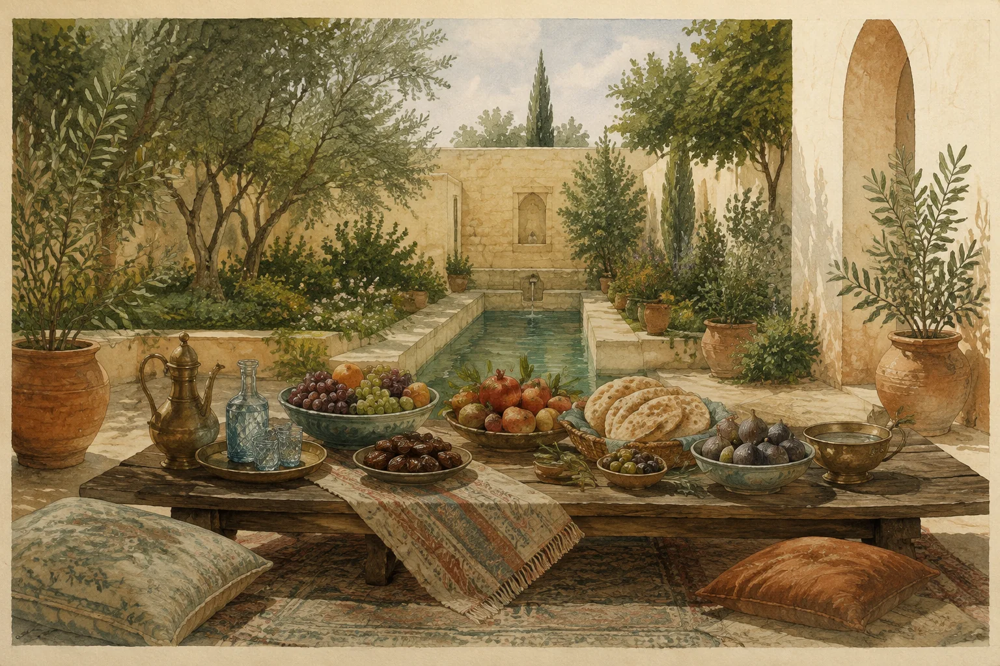
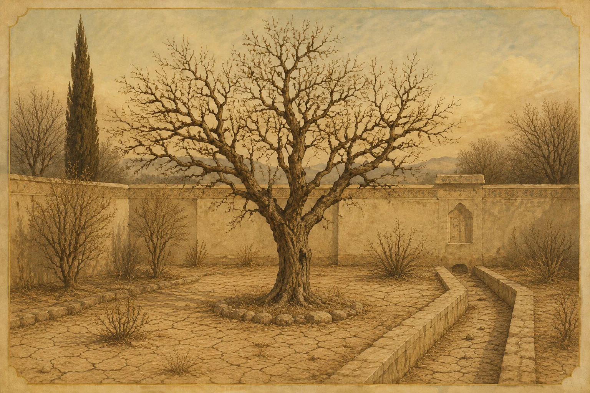
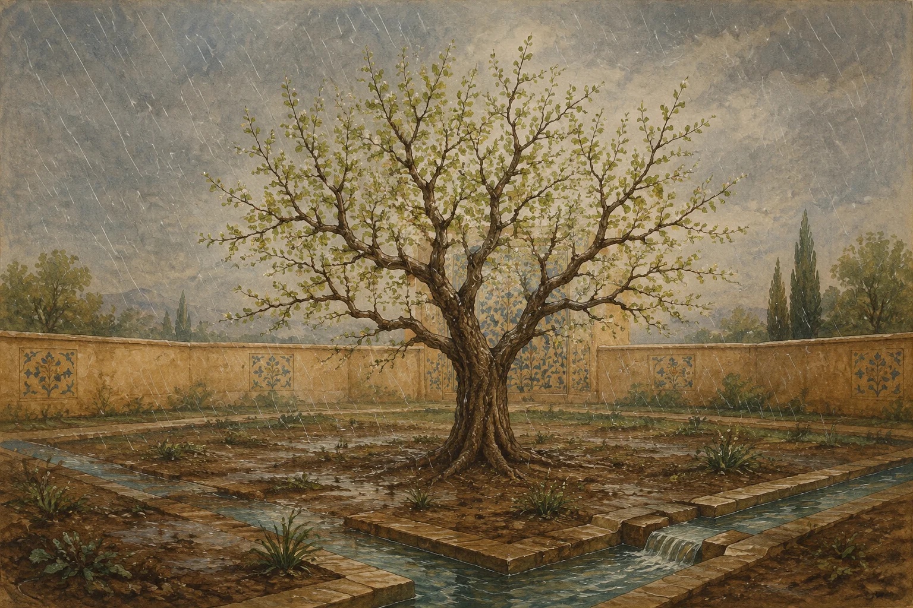
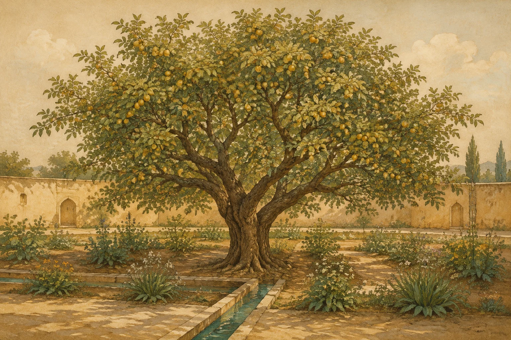
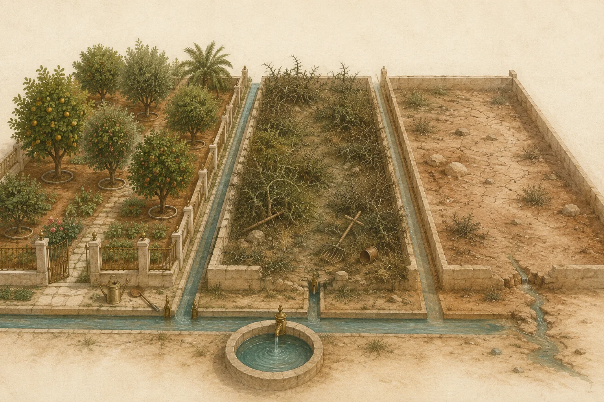
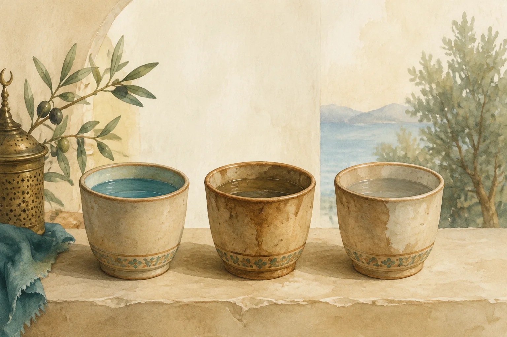

Prayer involves your heart, your words, and your body. Ibn al-Qayyim explains how each part helps you turn to Allah. He also explains why we need prayer five times a day and compares its lasting benefit with the musical listening he criticises.
The formal prayer, with its set words and movements.
Wuḍūʾ
Washing before prayer.
Qiblah
The direction of the Kaʿbah, which Muslims face in prayer.
Rakʿah
One unit of prayer.
Rukūʿ
Bowing in prayer.
Sujūd
Prostration: placing the forehead and nose on the ground in worship.
Dhikr
Remembering Allah through words and attention.
Duʿāʾ
Asking Allah for help.
Khushūʿ
Humble, attentive stillness before Allah.
Nafs
The self. In these passages, often the self’s pull toward harmful desires.
Samāʿ
Listening. Here, usually the musical and poetic gatherings the author discusses.
Hadith
A report about the Prophet Muhammad ﷺ. A hadith qudsī reports words from Allah through the Prophet ﷺ.
Tawḥīd
Worshipping Allah alone, without partners.
Tashahhud
The words of greeting and faith said while sitting near the end of prayer.
With sources: the Arabic references are visible in this section. Read the references →
02 · The opening argument
What holds your heart’s attention?
Ibn al-Qayyim compares the joy of prayer with the excitement of musical listening. He argues that becoming more attached to the listening he describes makes a person less attached to prayer.
In one line
The author argues that these two attachments compete for the heart. As one grows stronger, it pushes the other aside.
What the author compares
The delight of prayer
Paying attention to Allah, the Qur’an, and the acts of prayer.
↔
The competing attachment
The listening the author questions
Gatherings where people use music and poetry to seek intense spiritual feelings.
This is the author’s argument about what shapes the heart. He is not describing every use of sound. Later, he praises listening carefully to the Qur’an.
“By Allah, the two have never gathered in one heart without one of them driving the other out.”
Chapter Three · The author’s comparison of musical listening and prayer
Why the order of the book matters
Chapters One and Two explain prayer in detail, on pages 17–75 of the English edition. Chapters Three to Five then compare musical listening with that experience of prayer. Reading the explanation of prayer first helps the comparison make sense.
A point to keep in mind
This is a book about prayer, not a general study of music. Most of the book explains the meaning of prayer. The later chapters use that explanation to question musical listening.
For reflection
What do you regularly do to strengthen your connection with prayer?
Which habits strengthen your attention during prayer?
How would you describe what prayer means to you?
Passages behind this section
فصل — في الموازنة بين ذوق السَّماع وذوق الصلاة والقرآن
In this passage the stated aim: that each taste is wholly other than its rival, and that as one gains command the other loses its hold.
The author asks whether these listeners find anything like the joy of prayer in their gatherings. He also asks whether those gatherings leave them able to find even a little of that joy in prayer. His questions grow stronger, asking whether they have sensed even its smallest trace. He gives his own view that the two experiences oppose each other.
With sources: the Arabic references are visible in this section. Read the references →
03 · Chapter One §1.1
The invitation to prayer
Allah gives us prayer because we need Allah’s help. Allah does not need our worship. Ibn al-Qayyim describes prayer as a gift brought to us through the Prophet Muhammad ﷺ.
The author compares prayer with a special meal. Different foods meet different needs. In the same way, the different parts of prayer each help the heart. The five daily prayers are five invitations to return.
In one line
The author compares prayer to an invitation to a special meal. Allah invites us five times a day. Like different foods in a meal, each part of prayer helps the heart in a different way.

The different dishes stand for the different parts of one prayer. The invitation to that meal comes five times a day.
Six ways the author describes prayer
The first four descriptions show how prayer brings joy and comfort. The last two show how prayer reveals the condition of the heart.
muḥibbīn
Deep comfort
For people who love Allah. The Arabic phrase “coolness of the eyes” means deep joy and relief.
muwaḥḥidīn
Joy for the spirit
For people who worship Allah alone.
ʿābidīn
A garden
For worshippers. A garden gives life and refreshment; prayer does the same for the heart.
khāshiʿīn
Peace and joy
For people who stand humbly before Allah.
ṣādiqīn
A test of sincerity
The author compares prayer to a stone used to test whether metal is genuine. Prayer helps reveal whether a person’s words and heart agree.
sālikīn
A set of scales
Prayer helps people see how they are doing as they try to draw closer to Allah.
Why a special meal?
People face desires and temptations every day. Out of mercy, Allah gives us prayer to help us face them. Ibn al-Qayyim pictures this gift as a generous host offering a meal, fine clothes, and gifts. Each part of prayer gives a benefit that the other parts do not give in the same way.
In the picture, the guests arrive hungry, thirsty, poorly clothed, and unwell. They leave fed, refreshed, and cared for. The author uses these needs to explain how prayer helps a heart that has become tired, distracted, or weak.
Benefits the author describes
Helps wipe away minor sins
Brings light and strength to the heart
Brings more of what a person needs in this life
Brings love from other people
Brings joy to the angels and the earth
Brings light and reward on the Day of Judgement
A point to keep in mind
Prayer is called a gift because it meets a real need. Each part helps the heart, and we need that help again throughout the day.
For reflection
Do you begin prayer thinking about the help Allah is offering you?
Think of praising Allah and asking for forgiveness. How does each help your heart?
What would you like to leave behind when you finish praying?
The author gives prayer six descriptions: comfort for those who love Allah, joy for those who worship Allah alone, a garden for worshippers, delight for the humble, a test of sincerity, and scales for people seeking to draw closer to Allah.
With sources: the Arabic references are visible in this section. Read the references →
04 · Chapter One §1.2–1.3
The heart is a piece of land
Think of the heart as a garden. Remembering Allah helps it grow. Neglecting that remembrance is like leaving it without rain. Your hands, feet, and other parts of the body are like branches: what happens in the heart affects what you do.
In one line
Remembering Allah gives life to the heart. Neglect dries it out. The more we neglect it, the more harm we do—but the garden can grow again.
A closer look
What changes when the rain returns?
Follow the change from dryness to rain and new growth, and what each means for the heart and limbs.



Neglect dries the soil
A garden dries out when it has no water. In the same way, the heart weakens when a person stops remembering Allah. The harm grows with the neglect. This is a warning about a condition that can change.
Remembrance neglected→Heart loses vitality→Doing good becomes harder
Allah’s mercy brings new life
Returning to Allah is like rain reaching dry ground. The author shows the garden growing again. The point is both the harm of neglect and the hope of return.
Turning back→Rain reaches the soil→Growth resumes
The branches respond
The branches stand for the parts of your body. When remembering Allah strengthens the heart, doing good becomes easier. Each part of the body has its own way to worship.
A nourished heart→The body responds→Fruits of worship
Why does the author compare the limbs to branches?
A healthy heart helps the body respond to Allah’s commands, just as water helps a tree grow strong branches.
Why we need prayer again and again
Our hearts need regular care. That is why the invitation to prayer comes five times a day. We also keep asking Allah for help between prayers. The English edition explains the gaps this way; the Arabic stresses that our need for Allah’s mercy continues.
The author calls neglect a drought of the heart. A short period of neglect does not have the same effect as a long one. The harm grows as the neglect grows.
What happens when a tree is left to die?
Without water, a tree stops giving fruit. Its branches become dry and break easily. The author compares this with a heart so ruled by harmful desires that the body no longer responds to good.
The picture ends with a dead tree being cut down for firewood. This is a serious warning about neglect. Earlier in the same passage, the author shows that rain can restore growth.
Five things that give life to the heart
Worship Allah alone — tawḥīd
Love Allah
Learn about Allah
Remember Allah — dhikr
Ask Allah for help — duʿāʾ
A point to keep in mind
Drought is not a permanent verdict on a person. The garden can grow again when Allah’s mercy returns. Remembering Allah and turning back to Allah are central to the picture.
For reflection
What helps you return to remembrance after distraction?
Which needs more care: worshipping Allah alone, loving Allah, knowing Allah, remembering Allah, or asking Allah for help?
Which good action becomes easier when you regularly remember Allah?
Is one whose heart Allah has opened to Islam, so he is enlightened by his Lord [like a disbeliever]? Woe to those whose hearts are hardened upon hearing the reminder of Allah; it is they who are clearly misguided.
O people, if you are in doubt concerning the Resurrection, then We surely created you[1] from dust, then from a drop of sperm[2], then from a clot[3], then from a lump of flesh[4] – formed or unformed[5] – so that We may make it clear to you [Our power]. We settle in the wombs whatever We will for an appointed term. Then We bring you out as infants, then [We nurture you] so that you may reach your maturity. Then some of you die, while others are left to reach decrepit old age so that they may know nothing after having knowledge. You see the land lifeless, then as soon as We send down rain on it, it stirs and swells to life and brings forth every type of pleasant plant.
Translator’s notes
[1] i.e., Your father, Adam. [2] Nutfah: zygote, which is resulted from the union of male and female gametes (sperm and egg).
[3] ‘Alaqah: a clinging clot, which resembles a leech. [4] Mudghah: a chewed piece of meat.
[5] i.e., formed ending into a healthy embryo, or defective ending in miscarriage.
Complete Arabic verses · English translation of the meanings: Rowwad Translation Center, version 1.0.19, via QuranEnc.com.
Hearts can become dry again and again. Allah’s mercy renews the invitation to prayer. Throughout life, the worshipper keeps asking Allah for the care that gives the heart life. The author compares faith with plants and good worship with their growth and fruit.
The heart dries when it loses five things: worship of Allah alone, love of Allah, knowledge of Allah, remembrance of Allah, and asking Allah for help. Harmful desires then make the body slow to obey. The author connects this with Qur’an 39:22, included below.
With sources: the Arabic references are visible in this section. Read the references →
05 · Chapter One §1.4–1.6
Three ways of using what we are given
The author gives three examples of how people use what Allah has given them. His strongest warning is about someone who wastes these gifts completely.
In one line
One person cares for a gift, another uses it to cause harm, and a third wastes it. The examples ask us to think about how we use our bodies, time, and abilities.
The author is describing chosen neglect and misuse. These examples are not a judgement about illness, disability, being unable to work, or needing rest.

Three uses of the same resources: caring for them, using them to cause harm, or wasting them. The middle picture softens the author’s much harsher example.
One · care
Using the body to obey Allah
The first person sees the body as a gift from Allah. The heart leads, and each part of the body takes part in worship. The author compares this with making a trade that brings great profit.
The story: a person receives land, tools, seed, and water. The person plants it, builds a fence, hires guards, pulls weeds, replaces dead plants, and uses the harvest to care for the land.
Two · misuse
Using the body to do wrong
The second person uses these gifts to disobey Allah. The author compares this with a failed trade: the person loses reward and faces punishment.
The story: a person turns the land into a home for dangerous animals, a place for dead bodies, and a hiding place for thieves. Even the farming tools are given to the people causing harm.
Three · neglect
Wasting the gifts completely
The third person does nothing useful for this life or the next. The author calls this an even greater loss. His warning is about someone who chooses to waste every opportunity to fulfil a responsibility.
The story: a person leaves the land uncared for and lets the water run into the desert. Nothing useful grows, and the person is left with regret.
Why the author warns so strongly about waste
The author’s reasoning is this: working only for this life already leaves an important duty unmet. Doing nothing for either this life or the next wastes both opportunities.
A distracted guest at a king’s door
Imagine a person going to a king to ask for forgiveness and help. Just before meeting the king, the visitor turns away and becomes busy with something the king dislikes. The visitor sends servants to speak instead. The author compares this with praying while the body is present but the heart is elsewhere.
The king still gives the servants something because the king is generous. But a small gift is not the same as the full reward of someone who took part properly. The author uses this difference to explain what attention adds to prayer.
A point to keep in mind
The third example warns against choosing to waste what you have been given. It does not blame people for being unable to work or for needing rest.
For reflection
Which of the three describes how you used your body this week?
What would caring for your responsibilities look like today?
How did you use your time and abilities this week?
The first person uses the body for the purpose Allah created it for. The author compares this with a profitable trade. The person recognises the body as a gift, worships with heart and body, and protects both from what displeases Allah. In prayer, each part follows the heart’s lead.
The first person receives land, tools, seed, and enough water. The person prepares the soil and plants different crops and fruit trees. A wall and guards protect the land from damage and intruders. Each day, the person repairs damage, replaces dead plants, removes weeds and thorns, and uses the harvest to support the farm.
The heart of prayer is giving Allah your full attention. A distracted worshipper is like a visitor who comes to a king to apologise and ask for help. The visitor wants food to gain strength for service. Just before the meeting, the visitor turns aside or turns away completely. Something the king dislikes now holds the visitor’s attention.
With sources: the Arabic references are visible in this section. Read the references →
06 · The meaning of the movement
Lowering yourself and drawing closer to Allah
In sujūd, or prostration, you place your face on the ground. Ibn al-Qayyim connects this humble act with being close to Allah. The steps below show how the other movements prepare for it.
In one line
The face is lowered to the ground in sujūd. This shows humility before Allah. The author describes this as the point of greatest nearness to Allah in prayer.
A closer look
Follow one rakʿah
A rakʿah is one unit of prayer. Follow its movements, then the closing sitting after the final unit.
Stand and recite
Outward
Stand and recite.
Inward
Think about the meaning of Allah’s words.
Reciting the Qur’an has its own place in prayer. It does not replace what you say while bowing or prostrating.
Turn to Allah with humility and a sense of your need.
The hadith describes prostration as the point of greatest nearness to Allah. The movement is an act of worship, not a way to measure physical distance.
Why pause after bowing instead of rushing to prostration?
Standing after bowing is a part of prayer in its own right. It gives you time to praise and thank Allah.
A pattern found in Sūrat al-ʿAlaq
The opening verses of al-ʿAlaq were the first revelation. The complete surah begins with recitation and ends with prostration and nearness to Allah. Read both complete verses below.
The author sees the same pattern in a rakʿah: it begins with recitation and ends with prostration.
Five acts that name the whole prayer
The Qur’an sometimes names prayer by one of its acts. Ibn al-Qayyim gives these five examples. This is not a complete list of the legal requirements of prayer.
The author calls prostration the highest act of prayer and Qur’anic recitation its highest form of remembrance.
A point to keep in mind
Lowering the body does not mean becoming spiritually lower. The author describes sujūd as a high point of prayer because of its humility and nearness to Allah.
For reflection
Did you remember Allah’s nearness during your last prostration?
Do you give bowing time and attention, or rush through it?
Be mindful of the prayers[131], especially the middle prayer; and stand before Allah in complete devotion[132].
Translator’s notes
[131] The five obligatory daily Prayers.
[132] Prayers are mentioned in the midst of marital affair rulings, because of the hurtful feelings divorce can leave. Hence, people are reminded of the Hereafter, whereby they should not ‘overlook kindness’ among themselves by this reminder of accountability.
Establish prayer at the decline of the sun until the darkness of the night, and the recitation of dawn [prayer][68], for the recitation of dawn is ever witnessed [by the angels][69].
Translator’s notes
[68] i.e., the zuhr, asr, maghrib, and ‘ishā’ prayers.
[69] i.e., the fajr prayer, in which the recitation of the Qur’an is prolonged, for it is witnessed by angels. This verse alluded to all five obligatory daily prayers.
Indeed, your Lord knows that you [O Prophet] stand up in prayer for nearly two-thirds of the night, or half of it, or one-third of it, as do others among your companions. Allah determines the night and the day; He knows that you [Muslims] cannot keep an accurate count of it, so He pardoned you[7]. Recite then as much of the Qur’an as is easy for you [in the night prayers]. He knows that there are some among you who will be ill, and others traveling in the land, seeking the grace of Allah, and others fighting in Allah’s way. So recite as much of it as is easy for you; establish prayer and give zakah; and lend to Allah a goodly loan[8]. Whatever good you send forth for yourselves, you will find it with Allah, much better in condition and much greater in reward[9]. And seek forgiveness of Allah, for indeed Allah is All-Forgiving, Most-Merciful.
Translator’s notes
[7] The ruling mentioned at the beginning of this surah is lightened here. So from now on, the believers do not have to stick to any of the portions specified there; rather, they can pray whatever they can at night. It is out of the mercy of Allah upon His servants that He does not want hardship for them.
[8] i.e., giving in charity and for His causes.
[9] It will be rewarded tenfold, or 700-fold, and Allah gives even more to whoever He wills. See 2:261.
O you who believe, when the call for prayer is made on Friday, then hasten to the remembrance of Allah and leave off trading. That is better for you, if only you knew.
O you who believe, do not let your wealth and your children distract you from Allah’s remembrance. For whoever does that, it is they who are the losers.
An early Muslim is asked whether the heart can prostrate. The answer describes a humility that lasts until meeting Allah. The source note attributes this saying to Sahl ibn ʿAbd Allāh al-Tustarī through Ibn Taymiyyah. It means remaining humble, repentant, and aware of Allah, both alone and with others.
The worshipper says the takbīr and lowers into sujūd. The forehead, face, and nose come to the ground. The face, normally held high, is humbled before Allah. The heart also turns to Allah with need, humility, and regret.
With sources: the Arabic references are visible in this section. Read the references →
07 · Chapter One §1.8–1.39
Movement by movement
Follow the parts of prayer in order. Each step explains what you do and what it means for the heart. Use the movement menu to return to a particular part.
In one line
Your body, words, and heart work together as you praise Allah, ask for help, and show humility.
Wuḍūʾ · washing before prayer
Purification
Outward
Wash the parts of the body used in prayer.
Inward
The author connects washing the body with repentance: admitting wrong, asking Allah for forgiveness, and returning to what is right. Qur’an 2:222 brings repentance and cleanliness together.
Water cleans the body. Repentance turns the heart away from sin. The statement of faith turns worship to Allah alone.Read the complete Qur’anic verses (1)Qur’an 2:222
They ask you about menstruation. Say: “It is impurity; so stay away from women during menstruation[115] and do not have intercourse with them until they become pure. When they are cleansed[116], then have intimacy with them as Allah has commanded you. Allah loves those who frequently repent and He loves those who purify themselves.
Translator’s notes
[115] i.e., refrain from sexual intercourse. [116] By taking a ritual bath (ghusl).
Complete Arabic verses · English translation of the meanings: Rowwad Translation Center, version 1.0.19, via QuranEnc.com.
Coming to the mosque
Coming to Allah’s house
Outward
Join the prayer with others. The author notes that scholars differ on whether mosque attendance is required or strongly encouraged.
Inward
After washing, the person returns to worship. Ibn al-Qayyim compares this with someone coming back after neglecting a duty. The worshipper stands humbly before Allah and asks for acceptance.
Takbīr · declaring Allah’s greatness
Takbīrat al-Iḥrām
Outward
Face the qiblah, the direction of the Kaʿbah, and begin with Allāhu akbar. Let your heart recognise Allah’s greatness as your tongue says the words.
Inward
The author asks whether your attention agrees with your words. If another concern matters more to you at that moment, the words and heart do not agree. Bring your attention back to Allah.
Recognising Allah’s greatness also challenges pride. The author compares pride to a cloak that the worshipper needs to take off.
Opening praise, then asking for protection
Istiftāḥ · Istiʿādhah
Outward
Begin with praise of Allah, such as the opening prayer Subḥānaka Allāhumma wa biḥamdika. Before reciting the Qur’an, ask Allah for protection from Satan.
Inward
Praise helps bring a distracted heart back to Allah. The author says Satan first tries to stop a person praying. If that fails, Satan tries to distract the heart during prayer. That is why the worshipper asks Allah for protection before reciting.
“If the sheepdog rushes at you, do not busy yourself fighting it off and driving it back. Go to the shepherd and
call on him — he will turn it away from you and deal with it for you.”
Ibn Taymiyyah, to Ibn al-Qayyim · Ch. 1 §1.14
The sheepdog stands for an enemy you cannot overcome alone. The shepherd can call the dog away. In the same way, ask Allah for protection instead of relying only on your own strength. The author also compares speaking to Allah with a distracted heart to speaking to a king while turning your back.
al-Fātiḥah
The response in the hadith
Outward
Reciting the opening chapter, verse by verse.
Inward
Pause briefly at the end of each verse. Think about the response described in the hadith. A hadith qudsī reports words from Allah through the Prophet ﷺ. Here, it explains the relationship between praising Allah and asking Allah for help.
A closer look
Recite, pause, understand
Choose a passage to read the verses and the response reported in the hadith. Think about that response; do not wait for an audible voice.
All praise be to Allah[1], the Lord[2] of the worlds[3],
Translator’s notes
[1] Allah is God’s most unique name.
[2] The Arabic term "rabb" (translated as "Lord") includes all of the following meanings: "owner, master, ruler, controller, sustainer, provider, guardian and caretaker."
[3] "the worlds" means mankind, jinn, and all that exists.
Complete Arabic verses · English translation of the meanings: Rowwad Translation Center, version 1.0.19, via QuranEnc.com.
Reveal the response reported in the hadith
“My servant has praised Me.”
What this means
Allah’s response, reported in the hadith
Allah’s names, qualities, and actions are perfect. Allah creates and cares for every part of creation. Worship belongs to Allah alone.
[4] Ar-Rahmān and Ar-Raheem are two names of Allah: Rahmān is used only to describe Allah, while raheem might be used to describe a human as well. Rahmān carries a wider meaning - merciful to all creation. Justice is a part of this mercy. Raheem includes the concept of specialty - especially merciful to the believers. Forgiveness is a part of this mercy. In addition, Rahmān is adjectival, referring to an attribute of Allah and is part of His essence. Raheem is verbal, indicating what He does: i.e., bestowing and implementing mercy.
Complete Arabic verses · English translation of the meanings: Rowwad Translation Center, version 1.0.19, via QuranEnc.com.
Reveal the response reported in the hadith
“My servant has extolled Me.”
What this means
Allah’s response, reported in the hadith
Allah’s mercy reaches all creation. Being able to stand in prayer is also a gift of Allah’s mercy. Thanāʾ means praising Allah again by naming Allah’s good qualities.
the path of those whom You have blessed[6]; not of those who incurred Your Wrath[7], or of those who went astray[8].
Translator’s notes
[6] The way of the Prophets and those who follow them.
[7] Those who know the Truth and do not follow it, like the Jews.
[8] Those who are ignorant of the Truth and follow misguidance, like the Christians.
Complete Arabic verses · English translation of the meanings: Rowwad Translation Center, version 1.0.19, via QuranEnc.com.
Reveal the response reported in the hadith
“This is for My servant, and My servant shall have what he asks.”
What this means
Allah’s response, reported in the hadith
The request continues to the end of the surah. We ask Allah to help us know what is right, want it, do it, keep doing it, and share it patiently with others.
Ch. 1 §1.15, citing the hadith of Abū Hurayrah in Ṣaḥīḥ Muslim 395a (numbered 775 in the English edition)
Why each part matters
The words and movements of prayer have different purposes. Recitation, bowing, and prostration each ask something different of the heart. The author explains why we cannot simply exchange one part for another.
Ḥamd · praising Allah
The author says all creation points to Allah’s greatness. Even being able to praise Allah is a gift from Allah. That gives us another reason to be thankful. Al-Awzāʿī reports hearing someone give thanks for both a gift received and a harm prevented.
All praise be to Allah[1], the Lord[2] of the worlds[3],
Translator’s notes
[1] Allah is God’s most unique name.
[2] The Arabic term "rabb" (translated as "Lord") includes all of the following meanings: "owner, master, ruler, controller, sustainer, provider, guardian and caretaker."
[3] "the worlds" means mankind, jinn, and all that exists.
[4] Ar-Rahmān and Ar-Raheem are two names of Allah: Rahmān is used only to describe Allah, while raheem might be used to describe a human as well. Rahmān carries a wider meaning - merciful to all creation. Justice is a part of this mercy. Raheem includes the concept of specialty - especially merciful to the believers. Forgiveness is a part of this mercy. In addition, Rahmān is adjectival, referring to an attribute of Allah and is part of His essence. Raheem is verbal, indicating what He does: i.e., bestowing and implementing mercy.
the path of those whom You have blessed[6]; not of those who incurred Your Wrath[7], or of those who went astray[8].
Translator’s notes
[6] The way of the Prophets and those who follow them.
[7] Those who know the Truth and do not follow it, like the Jews.
[8] Those who are ignorant of the Truth and follow misguidance, like the Christians.
Those [angels] who bear the Throne and those around it glorify their Lord with His praise and believe in Him, and seek forgiveness for those who believe, [saying], “Our Lord, Your mercy and knowledge encompass everything, so forgive those who repent and follow Your way, and protect them from the punishment of the Blazing Fire.
You will see the angels surrounding the Throne, glorifying their Lord with His praise, and matters will be settled between them with justice, and it will be said[23]: All praise be to Allah, the Lord of the worlds.”
Translator’s notes
[23] The believers will praise Allah for His grace, and the disbelievers will praise Him for His justice and equity.
He alone has the keys of the unseen[17]; no one knows them except Him. He knows what is in the land and sea. Not a leaf falls without His knowledge, nor a grain in the darkness of the earth, nor anything moist or dry, but is [written] in a Clear Record[18].
Translator’s notes
[17] Keys of the Unseen, such as the knowledge of the Hour; sending down of rain; knowledge of what is in the wombs. No one knows what one will earn for tomorrow, and where one will die. See 31:34.
[18] The Preserved Tablet.
To Allah belongs the unseen of the heavens and earth, and to Him will return all matters. So worship Him and put your trust in Him, for your Lord is not unaware of what you do.
Complete Arabic verses · English translation of the meanings: Rowwad Translation Center, version 1.0.19, via QuranEnc.com.
Worshipping Allah and asking for help
In al-Fātiḥah 1:5, worship comes before the request for help. The author explains why: worship is our purpose and Allah’s right. Allah’s help makes that worship possible.
The verse addresses Allah directly twice. Both worship and the request for help are directed to Allah alone. The verse comes after praise and before the request for guidance.
Turn back from a wrong belief, intention, or action.
Learn the details of a main idea you already know.
Understand a part you have been missing.
Find guidance for what comes next.
Learn what to believe about an unfamiliar matter.
Why five times daily
We need guidance even when we already believe. That is why we ask for it repeatedly in the five daily prayers. Knowing what is right today does not remove our need for help tomorrow.
A closer look
Guidance is needed in different ways
Each example shows a different reason to ask for guidance. Move through the ten cases in the source’s order.
Example situation · 1 of 10
I acted on a mistaken belief or intention.
Ask Allah to forgive the mistake and help you change your belief, intention, or action.
Example situation · 2 of 10
I know the main idea but not what to do.
Ask Allah to help you understand the details and put them into practice.
Example situation · 3 of 10
I understand one part but miss another.
Ask Allah to help you understand what you are missing.
Example situation · 4 of 10
A new situation lies ahead.
Ask Allah for guidance in what comes next, just as you needed it before.
Example situation · 5 of 10
I do not know what to believe about this.
Ask Allah to help you recognise what is true.
Example situation · 6 of 10
I am convinced of something false.
Ask Allah to help you let go of the false belief and accept the truth.
Example situation · 7 of 10
I can do what is right, but do not want to.
Ask Allah to help you want to do the good that you are already able to do.
Example situation · 8 of 10
I want to act, but cannot yet do it.
Ask Allah for the ability to do the good you want to do. This case is in the Arabic but missing from the English edition’s list.
Example situation · 9 of 10
I do not want to act and cannot yet do it.
Ask Allah for both the willingness and the ability to act.
Example situation · 10 of 10
I already believe and act rightly here.
Ask Allah to help you stay firm and continue doing what is right.
Most of these examples concern someone who already believes. Guidance is not only about first accepting faith. It is also about living by it every day.
Replace a false belief with a true one.
Want to do the good you are already able to do.
Gain the ability to do the good you want to do.
Gain both willingness and ability.
Keep following what you already know is right.
Matters in which he believes the opposite of the truth — he needs a guidance that erases the false belief and sets its contrary in its place
Things he is able to do but has no will for — he needs a will created in him
Things he wills but is unable to do — he needs to be given the power
Things he neither wills nor is able to do — he needs both created
Things he already holds rightly — he needs to be kept steady in them and to continue
Favoured
Receives guidance and stays with it
People receive different amounts of guidance and need to keep growing in it.
Astray
Does not know the way
The person has not found the knowledge and action needed to follow the right path.
Anger
Knows the way but turns away
The person knows what is right but does not act on it.
Āmīn, then the movement into bowing
The request is affirmed
Outward
Say āmīn after the request for guidance. The author then moves to raising the hands and saying the takbīr before bowing.
Inward
Āmīn expresses hope that Allah will answer the request. Raising the hands gives the hands a part in worship. Repeating the takbīr helps renew attention to Allah’s greatness.
The author compares the repeated takbīr with the talbiyah, the pilgrim’s call to Allah during Hajj. Both mark the acts of worship. This comparison does not list the exact words for every change of position.
Bow, lower your head, and say Subḥāna Rabbiya’l-ʿAẓīm: “Glory to my Lord, the Magnificent.” The author describes raising the hands before bowing as following the Prophet ﷺ and giving the hands a part in worship.
Inward
Bowing expresses that we are small before Allah. As the heart recognises Allah’s greatness, pride in ourselves has less room to grow.
The heart, body, and words show humility together. We bow as servants of Allah. Greatness belongs to Allah.
Rising from bowing
al-Qiyām
Outward
Stand upright again and praise Allah.
Inward
Think about Allah’s gifts and Allah’s power to give or withhold. Thank Allah for helping you bow and worship.
This standing is a part of prayer in its own right. The author describes the Prophet ﷺ giving it time, just as he did bowing and prostration. During night prayer, the Prophet ﷺ repeatedly praised Allah while standing here.
Prostration
al-Sujūd — the closest point
Outward
Place your forehead and nose on the ground. The face, usually held high, is now lowered before Allah. The author describes keeping the thighs from resting on the shins, the belly from the thighs, and the upper arms from the sides.
Inward
Each part of the body takes its own share of the effort. The heart also submits to Allah. The point is that the body’s humble position and the heart’s humility should agree.
“Does the heart prostrate?” — “Yes, by Allah — a prostration from which it does not raise its head until it meets Allah, Mighty and Majestic.”
A saying from an early Muslim, Sahl ibn ʿAbdullāh al-Tustarī, as reported by Ibn Taymiyyah. It describes lasting humility in the heart.
Sitting between the two prostrations
The five requests
Outward
Sit and let your body become still. The author describes the Prophet ﷺ taking time here and repeatedly asking Allah for forgiveness.
Inward
You are asking Allah to forgive what you have done wrong and help you resist the part of yourself that urges you toward wrong.
The request
What it secures, in his own accounting
Mercy · raḥma
Brings together all the help named in the other requests
Forgiveness · maghfira
Protects against the harm of sins in this life and the next
Guidance · hidāya
Helps you reach good in the next life and find the right way in every part of life
What we need · rizq
Provides for the body, heart, and spirit, in this life and the next
Wellbeing · ʿāfiya
Protects against harm in this life
Chapter One · These five requests ask for help and protection in this life and the next. They are grouped here by meaning, not by recitation order.
The heart and the nafs
Nafs means the self. Here, the author focuses on the self’s pull toward wrong. The heart and self share the results of our actions. If harmful desires lead, the heart becomes trapped by them. If the heart is stronger, it can lead the self toward obedience to Allah.
The second prostration
Why twice, when bowing is once
The reason
The author gives special importance to sujūd because it expresses deep humility and nearness to Allah. Bowing prepares for it. The second prostration completes the unit of prayer.
Why anything repeats
One mouthful does not satisfy hunger. In the same way, repeated acts of prayer help feed the heart. The second act can also be thanks for the first. The author compares repetition with washing clothing again to make it cleaner.
A person who rushes prayer is like someone hungry who takes only one or two mouthfuls. How much help can that small amount give?
Plain-English explanation of a comparison from an early Muslim, quoted by Ibn al-Qayyim
The author compares sujūd with ṭawāf, circling the Kaʿbah during Hajj. Both are moments of special nearness to Allah. He tells how Ibn ʿUmar waited until he had finished ṭawāf before answering a marriage proposal for his daughter. Ibn ʿUmar did not want a worldly matter to interrupt that worship.
Tashahhud · the closing sitting
al-Taḥiyyāt · al-Taslīm
Outward
Sit for the closing words. Honour Allah, greet the Prophet ﷺ, yourself, and Allah’s righteous servants, state the two testimonies of faith, send blessings upon the Prophet ﷺ, and ask Allah for what you need. The salām ends the prayer.
Inward
Al-Taḥiyyāt gathers words and acts of honour and gives them to Allah alone. The author connects the word with ḥayāh, meaning life. Lasting life and rule belong to Allah.
Why the greetings follow this order
Praise of Allah comes before greetings to people. The author connects this with Qur’an 27:59. The Prophet ﷺ is greeted first because of the guidance the community received through him. The worshipper then greets themselves and all righteous servants of Allah.
The order of asking
The order is praise of Allah, blessings upon the Prophet ﷺ, then personal requests. The author cites the report of Fuḍālah ibn ʿUbayd for this order. After that, you may ask Allah for what you need.
Say, [O Prophet], “All praise is for Allah, and peace be upon His slaves whom He has chosen. Is Allah better, or those partners whom they associate with Him?”
Do not invoke with Allah another god; none has the right to be worshiped except Him. Everything will perish except His Face[38]. His is the Judgment and to Him you will all be brought back.
Translator’s notes
[38] i.e., except Himself. The commentators have two interpretations here: 1. that Allah is Permanent and Eternal, for everything will perish except Himself. 2. that everything will perish except what is done for the sake (Face) of Allah.
The likeness of those who take protectors other than Allah is that of a spider spinning a house. Indeed, the flimsiest of houses is the house of a spider[15], if only they knew.
Translator’s notes
[15] As it cannot protect the spider against rain, strong wind, and enemies.
Complete Arabic verses · English translation of the meanings: Rowwad Translation Center, version 1.0.19, via QuranEnc.com.
What the closing words mean
Al-Taḥiyyāt
All honours belong to Allah, whose life and rule never end. The author compares these words with the greetings once offered to kings.
Al-Ṣalawāt
All prayers belong to Allah. Prayer expresses the worship that we owe Allah.
Al-Ṭayyibāt
All good words and deeds belong to Allah. Allah is good and accepts what is good.
The words of remembrance
Subḥān Allāh declares Allah free of every fault. Al-ḥamdu lillāh praises Allah. Lā ilāha illā Allāh affirms worship of Allah alone. Allāhu akbar declares Allah’s greatness. Lā ḥawla wa lā quwwata illā billāh recognises that power and strength come through Allah. The author compares trusting another object of worship with trying to shelter in a spider’s web.
The two testimonies
The two testimonies affirm that Allah alone deserves worship and that Muhammad ﷺ is Allah’s Messenger. They are the foundation of prayer. The author connects saying them near the end of prayer with saying them after washing and at the end of life. He also records a disagreement about exactly when prayer is legally complete.
Paying attention in the heart matters alongside the actions of the body. This book explains their meaning. It is not a complete guide to the legal rules of prayer.
For reflection
Did your tongue and heart agree at the takbīr?
Which meaning could you attend to during a pause in al-Fātiḥah?
Between the two prostrations, did you ask for anything by name?
The worshipper faces the Kaʿbah with the body and Allah with the heart. The author describes lowering the head and gaze, yielding the hands, and standing in need and humility. The heart should stay focused on Allah.
Ibn al-Qayyim recalls advice from his teacher Ibn Taymiyyah. If a sheepdog rushes at you, ask the shepherd for help. The shepherd can call the dog away. Do not spend all your strength trying to fight the dog yourself. In the same way, seek Allah’s protection from Satan.
The author asks the worshipper to pause briefly at the end of each verse. Think about Allah’s response as reported in the hadith. This means paying attention to the reported words, not expecting an audible voice.
First, we may have acted on a wrong belief or intention. We need to repent. Second, we may know the main idea but not the details. Third, we may understand one part but miss another. Fourth, we need guidance in what comes next, just as we needed it before.
The sitting between two prostrations has its own purpose. The author describes the Prophet ﷺ giving it time, as he gave time to prostration. The requests are for Allah’s forgiveness, mercy, guidance, provision, and wellbeing.
Prayer feeds the heart and spirit. Repeating its acts is like taking more than one mouthful or drink. One small mouthful cannot satisfy a hungry person and may even make the hunger more noticeable. The author quotes an early Muslim who compares hurried prayer with taking only a bite or two from a meal.
With sources: the Arabic references are visible in this section. Read the references →
08 · Chapter Two
Two qiblahs
Your face points toward the Kaʿbah. Your heart turns toward Allah. The author asks you to give Allah your attention as carefully as you keep your body facing the qiblah.
In one line
Care for the heart, remember that you stand before Allah, and understand what you say and do. All three belong together.
The author says these three forms of attention help a person truly establish prayer. Allah’s care for the worshipper corresponds to the worshipper’s attention to Allah.
Plain-English explanation of the opening of Chapter Two
A closer look
Three forms of attention, one prayer
Select a focus. The three belong together; none makes the others unnecessary.
GuardAttendUnderstandThe whole heart turns toward Allah
Guard and repair the heart
Notice harmful desires, distractions, and passing thoughts. They can reduce or remove the reward of prayer. Keep bringing the heart back to Allah while you think about what the prayer means.
Remember that you stand before Allah
Murāqaba means being aware of Allah. Worship as though you see Allah, without trying to form a picture of Allah in your mind.
Understand the words and acts
Think about Allah’s words and the purpose of each movement. Understanding helps you pray with humility and stillness.
Does understanding the words replace guarding the heart?
No. The author brings all three forms of attention together. None replaces the others.
Trusting Allah and choosing what is right
Some things happen to us as part of Allah’s decree. We also have choices to make under Allah’s commands. The author asks us to respond faithfully to what happens and obey Allah in what we choose.
Taslīm means surrender to Allah. It does not mean doing wrong and excusing it by saying that Allah had already decreed it. Trusting Allah does not remove our responsibility to obey Allah.
Giving oneself in Allah’s cause; the author connects this with Allah’s promise of Paradise
Ṣalāh
Turning to Allah and receiving Allah’s care
The author says that turning fully to Allah in prayer brings together the benefits of the other acts of worship.
Finding comfort while praying
The Prophet ﷺ described deep comfort in prayer. Ibn al-Qayyim focuses on the word “in”: the comfort comes through entering the prayer. The author compares it with meeting someone you love or reaching a place of safety.
The Prophet ﷺ asked Bilāl to give rest through prayer. The author contrasts this with someone who only wants to finish and be free of the duty. One person finds rest while praying; the other looks for rest when it is over.
The curtain illustrates the author’s story about two visitors. One is welcomed close; the other remains separated from the king.
Two people performing the same prayer
Comfort found in the prayer
Finds joy, peace, and comfort while praying
Finds prayer refreshing, like time in a garden
Receives reward and a special closeness to Allah
Does not want the prayer to end
The story: the curtain is removed and the visitor is welcomed close to the king. The visitor enjoys the meeting and does not want to leave.
Comfort found outside the prayer
Prays in a rush because it is required
Says the words while wishing the prayer were already over
Feels trapped and waits for the prayer to end
May receive forgiveness and mercy, but may also face punishment for neglected parts of prayer
The story: the visitor enters the king’s house but stays behind a curtain. The curtain stands for the desires and distractions that keep the heart from paying attention.
A point to keep in mind
Keep caring for all three kinds of attention. Understanding the words does not replace watching the heart or remembering Allah.
For reflection
Which kind of attention could you give more care to in your next prayer?
Does your comfort arrive when the prayer begins, or when it ends?
Allah has purchased from the believers their lives and their wealth, and in return they will have Paradise[82]; they fight in the cause of Allah and they kill or are killed. This is a true promise, given by Him in the Torah, the Gospel and the Qur’an. Who is more faithful to his promise than Allah? Rejoice then in the transaction you have made with Him; that is the supreme triumph.
Translator’s notes
[82] Jābir ibn ‘Abdullah (رضي الله عنهما) reported: "On the day of the battle of Uhud, a man came to the Prophet (ﷺ) and said: "Can you tell me where I will be if I am martyred?" The Prophet (ﷺ) replied: "In Paradise." The man threw away some dates he was carrying in his hand, and fought till he was martyred." [Sahih al-Bukhāri: 377]
Complete Arabic verses · English translation of the meanings: Rowwad Translation Center, version 1.0.19, via QuranEnc.com.
While standing, remember Allah’s greatness and power to sustain all things. At the takbīr, recognise Allah’s majesty. The opening praise declares Allah free of faults and praises Allah’s perfection. In seeking protection, remember Allah’s power to guard you from the enemy.
The author describes different benefits of worship. Fasting purifies the self. Zakāh purifies wealth. Hajj brings forgiveness. Striving in Allah’s cause gives back the life Allah has bought with the promise of Paradise. Prayer brings together the person’s attention to Allah and Allah’s attention to the person. The author says this includes the benefits of the other acts.
Prayer can bring relief from the demands of life, like a tired traveller reaching home. The author contrasts finding rest through prayer with waiting for relief when it ends. A reluctant worshipper may rush, remain distracted, and say words that do not agree with the heart. That person wants to return to what feels more enjoyable.
With sources: the Arabic references are visible in this section. Read the references →
09 · Chapters Three to Five
What does the listening leave behind?
The author now asks about the musical and poetic gatherings he has been describing. What does a person feel during them? What remains afterward? Does the way a feeling is produced matter?
In one line
The author argues that a pleasant feeling can come mixed with harm. We need to consider both how it comes and what it leaves behind.
During the gathering
Caught up in the feeling
Enjoyment can make someone overlook the harm mixed with it.
→
After it ends
Noticing the effects afterward
The author describes feeling uneasy, cut off from Allah, and in need of help afterward.
This is the author’s argument about the gatherings in the book. It is not a test for judging someone’s faith from their mood.
What happens
Why the effect is noticed later
Imagine being so focused on something that you hardly notice a sting. Once your attention returns, you feel the pain. The author uses this example to explain how pleasure can hide harm until later.
The mixture
Clear and muddy water
The author compares mixed good and harm with a little clean water entering a much larger amount of muddy water. The clean water is still real, but it becomes mixed with the dirt. In his argument, a good feeling may come mixed with harmful desires and doubts.
The response
Returning to Allah
The author describes sincere people who leave these gatherings and quickly ask Allah for forgiveness. They try to undo the unease and distance they feel afterward.
A good drink deserves a clean cup. If the cup is dirty, the sweetness of the drink does not make the cup clean.
Plain-English explanation of the author’s honey-and-cup comparison in Chapter Five

The drink stands for what a person receives. The cup stands for the way it is received. The author asks us to consider both.
A closer look
Consider the source of the feeling
Choose an example. Something can feel pleasant without being good for us in every way.
Good drink, clean cup
A healthy heart receives something good in a good way. The author’s example is listening carefully to the Qur’an.
Harmful drink, dirty cup
A troubled heart receives something harmful through a harmful source. Enjoying it does not make it good.
A mixture of good and harm
The author describes a heart with both faith and hypocrisy: claiming faith while acting against it. He also describes mixed drinks and cups. These are different parts of the example. Honey in a dirty cup shows that real good can arrive through a harmful source.
The author points to prayer, reading and listening to the Qur’an, learning from scholars, striving in Allah’s cause, encouraging good, and opposing wrong. These were ways the Prophet ﷺ and the early Muslims cared for their hearts.
When the Companions wanted to strengthen their hearts, they asked someone to recite the Qur’an while the others listened. The author describes the peace, tears, and joy in faith that followed.
ʿUmar would say to Abū Mūsā al-Ashʿarī: “O Abū Mūsā, remind us of our Lord.” ʿUthmān said: “If our
hearts were pure, we would never have enough of the words of Allah.”
The author’s conclusion
The author concludes that the listening he describes is forbidden. He gives two reasons something may be forbidden: it causes harm itself, or it leads to something harmful.
This is Ibn al-Qayyim’s conclusion in this book. The book does not explain the full range of scholarly views on music and listening.
A point to keep in mind
The author does not say every good feeling at these gatherings is false. A sincere listener may feel something good. His objection is to the harmful source and mixture. He separately praises listening to the Qur’an.
For reflection
What do you reach for when you want your heart moved?
What stays with you after the pleasant feeling passes?
The Hour has drawn near and the moon has split asunder[1].
Translator’s notes
[1] The Quraysh pagans challenged the Prophet (ﷺ) to split the moon in two so that they believe in him. The moon was split as they requested and then re-joined, and the incident was reported by several eyewitnesses in different parts of the land; however, they still refused to believe, considering it magic.
and He will provide for him from where he does not expect. Whoever puts his trust in Allah, He is sufficient for him. Indeed, Allah will surely accomplish His purpose, for Allah has set a destiny for everything.
Complete Arabic verses · English translation of the meanings: Rowwad Translation Center, version 1.0.19, via QuranEnc.com.
The author asks whether these listeners find anything like the joy of prayer in their gatherings. He also asks whether those gatherings leave them able to find even a little of that joy in prayer. His questions grow stronger, asking whether they have sensed even its smallest trace. He gives his own view that the two experiences oppose each other.
The author describes sincere people who leave these gatherings and quickly return to Allah, ask forgiveness, and seek help for the unease they feel. He says recognising this pattern takes care and understanding of the self’s problems. He asks Allah for help.
A healthy heart receives a good drink in a clean cup. A troubled heart receives a harmful drink in a dirty cup. A heart containing both faith and hypocrisy receives according to that mixture. The Arabic then uses a phrase from Qur’an 65:3 about Allah setting a measure for everything.
With sources: the Arabic references are visible in this section. Read the references →
10 · What the prayer repairs
The gap between the prayers
Prayer helps restore a heart worn down by distraction and wrongdoing. That helps explain why prayer returns throughout the day.
In one line
The gaps allow rest and recovery. The next prayer helps us return to Allah and repair what has weakened.
What weakens the heart?
The author names four pressures: the self that urges wrong, desires demanding to be satisfied, natural habits and needs, and Satan’s attempts to mislead.
Allah gives us prayer to help restore what these pressures weaken. Prayer renews faith and the effort to do good.
Why are there gaps between prayers?
The author describes the gaps as part of Allah’s wisdom and mercy. We have time to rest before returning. The next prayer helps clean away what has built up since the last one.
The invitation returns because our need returns.
The body expresses what the heart means
Bowing, standing, and prostrating give the body ways to show humility and obedience. Each part of the body takes part in worship.
The heart of it all is giving Allah your full attention.
Preparing to stand before Allah
The author compares preparing for prayer with preparing for an important meeting. We come with care because we are about to stand before Allah.
This also reminds us that we will stand before Allah on the Day of Resurrection and answer for our actions.
A point to keep in mind
Prayer brings reward, forgiveness, and renewed strength. The gaps between prayers are not a reason to stop caring for the heart.
For reflection
What has distracted you since your last prayer?
What help would you like to ask Allah for in your next prayer?
How could you prepare for your next prayer with more care?
Two extra readings on humility
The English edition includes two short readings from other books by Ibn al-Qayyim. They explain what humility is and how its appearance can be copied.
Remembering Allah, reading Allah’s words, loving Allah, and worshipping Allah bring the heart peace and nearness. The author connects faith with safety and good worship with happiness. He presents these as necessary for a truly successful life.
The English edition adds two readings from other books by Ibn al-Qayyim. They ask how humility in the heart affects our actions, and why looking humble is not always the same as being humble.
In one line
A still body can express humility. But appearance alone does not tell us what is in the heart.
Appendix I · What khushūʿ means
Khushūʿ means humble, attentive stillness before Allah. The author begins with four Qur’anic passages about hearts, prayer, voices, and the earth. The complete verses are included below.
Humility begins in the heart and affects what we do. Accepting a true correction is one sign of it. The sayings in this reading warn us against trying to look more humble than we really are.
ʿĀʾishah’s description of ʿUmar shows why a quiet appearance is not the whole picture. He walked quickly, spoke clearly, and fed people generously. The question is whether we are sincere before Allah, not whether we look especially solemn.
Source: Madārij al-Sālikīn, in the section on khushūʿ. English pages 90–94. The English editor says the report about a man playing with his beard is fabricated. It is not used here as a saying of the Prophet ﷺ.
Appendix II · Real humility and pretending
From the heart outward
Love and respect for Allah, gratitude for Allah’s gifts, and awareness of our own mistakes humble the heart. That humility then affects the body.
Inward humility → outward expression
An outward performance
Someone can look still and humble while remaining full of pride or harmful desires. The outward appearance does not match the heart.
Outward appearance ≠ proof of humility
The author compares a humble heart with low ground where water collects. A proud heart is like raised ground where water does not settle. This image comes from al-Rūḥ, the second extra reading. It is different from the dry garden in the main book.
Use this comparison to examine your own intentions. It does not let you see whether another person is sincere.
Source: Al-Rūḥ, in the discussion of real and false humility. English pages 95–96.
Does a lowered head prove someone is sincere?
No. Humility can affect the body, but someone can also copy that appearance without having humility in the heart.
Has the time not yet come for those who believe that their hearts should be humbled at the remembrance of Allah and the truth that has been revealed? And that they should not be like those who were given the Scripture before, whose hearts grew hard after the passage of a long time, and many of them were evildoers.
On that day, they will follow the summoner[36]; none will dare to deviate. All voices will be hushed in awe before the Most Compassionate; you will hear nothing except a whisper[37].
Translator’s notes
[36] To the gathering for reckoning. [37] Or the sound of footsteps.
And among His signs is that you see the land withered, but when We send down rain upon it, it stirs and swells. He Who gives it life will surely give life to the dead, for He is Most Capable of all things.
Complete Arabic verses · English translation of the meanings: Rowwad Translation Center, version 1.0.19, via QuranEnc.com.
This list covers the main Arabic quotations, the English edition’s verse references and footnotes, and the appendix quotations. Clear Qur’anic echoes are identified separately as related verses. When the book quotes only part of a verse, this app includes the whole verse. Names of surahs are linked in passage 53.
1:1-7 · quoted throughout the discussion of al-Fātiḥah
22:5 · Related verse: the Arabic echoes its words about earth stirring, swelling, and growing
6:59 · Related verse: the passage’s image of a falling leaf
11:123 · Related verse: the Arabic phrase about all affairs returning to Allah
28:88 · Unnumbered Qur’anic phrase in the Arabic: everything perishes except Allah’s Face
29:41 · Related verse: the author’s comparison with taking shelter in a spider’s house
9:111 · Related verse: Allah’s purchase of believers’ lives for Paradise
65:3 · Unnumbered Qur’anic phrase in the Arabic: Allah has set a measure for everything
Arabic text and English translation of the meanings supplied by QuranEnc.com. English: Rowwad Translation Center, version 1.0.19, retrieved 6 September 2026. Translation and translator’s notes are reproduced unchanged. Publisher: Rowwad Translation Center, with the Rabwah Dawah Association, the Islamic Content Service Association in Languages, and IslamHouse.com.
The book’s own Arabic remains unchanged in the source view, even where it quotes only part of a verse or contains a transcription error. The separate verse panels provide the complete Qur’anic text. Explanations are not presented as Qur’an. Pronouns inside scripture and reported quotations are kept as published; our explanations name Allah directly.
Sources and what is included
This guide explains Asrār al-Ṣalāh in everyday English. It follows the Arabic text and uses the 2013 English edition to check meaning, page references, and notes. The two extra readings are kept separate.
The Arabic
Asrār al-Ṣalāh on Arabic Wikisource has 59 headings added by the website’s editors. They help locate passages; they are not necessarily titles chosen by Ibn al-Qayyim.
The online Arabic copy has some repeated words and apparent mistakes. We have checked this copy, not compared every surviving manuscript or Arabic edition.
The English edition
reviewed English scan, translated by Ayman ibn Khalid, Dar as-Sunnah, 2013. ISBN 1-904336-37-X. Page references here use the printed book’s page numbers, which differ from the PDF page count.
Some section numbers differ between the contents page and the book itself. Use the title and page number together. The main book is on pages 16–89; the extra readings are on pages 90–96.
Coverage register · 59 Arabic headings and English page references
Each Arabic heading links to an English explanation and the preserved Arabic text. The website’s editors added these headings to help readers find their place.
Ten guidance cases: Arabic heading 25 includes willingness without ability. English p. 45 lists nine and omits that separate case. All ten are retained here.
Five things that nourish the heart: tawḥīd begins the Arabic list. English p. 20 puts it last and adds “most importantly.” This guide follows the Arabic ordering.
Thanāʾ and tamjīd: the Arabic distinguishes repeated praise from praise of majesty. The English wording on p. 40 blurs that distinction. The al-Fātiḥah study follows the Arabic and the hadith.
Bowing: the Arabic says al-ʿAẓīm, the Magnificent. The English text on p. 68 says “Most High” although its transliteration says al-ʿAẓīm. The distinction is preserved here.
Submission to decree: the Arabic warns against excusing sin by fate. The wording at the end of English §2.3 (p. 70) obscures the warning; it is restored in the explanation.
Land metaphors: drought and rain belong to the main treatise. The low basin that retains water belongs to the second appendix from al-Rūḥ.
The banquet: five daily invitations are distinct from the varied dishes, which stand for the acts within prayer.
Scope, reports, and editorial choices
The illustrated guide selects the main ideas. The companion includes all 59 passages of the retrieved Arabic text and explains them in everyday English. It is an explanation, not a word-for-word translation. Repeated wording is sometimes combined. The two extra readings are summarised separately. The biography on pages 10–15 is shortened; its full lists of teachers, books, and comments from scholars are not reproduced.
The English editor could not trace two “O son of Adam” reports on page 26 in hadith collections. Passage 8 includes their meaning and clearly identifies that problem. They are not presented as verified words from Allah. The extra reading’s report about playing with a beard is not used as a saying of the Prophet ﷺ. Sayings from other Muslims are identified as such.
The five levels of prayer described in al-Wābil al-Ṣayyib come from another book. They are not added here as if they belonged to this text.
The pictures, diagrams, examples, and questions help explain the reading. They do not measure anyone’s faith or show unseen realities. The discussion of musical listening explains the author’s argument in this book.
Readability and Qur’anic coverage checked 6 September 2026. All 59 original Arabic headings and 276 text blocks are retained. The complete verse panels are checked against their source text. The English explanations have not had an independent scholarly review.
Read the book in order, one passage at a time. The English uses everyday language to explain the author’s ideas. Open the Arabic to compare it with the original text. Qur’anic verses appear separately, in full Arabic with an unchanged published translation. The original Arabic transcription is preserved, including its errors and repeated words.
Passage 1 of 59 · English edition pp. 16
The comparison that frames the book
The text opens by asking Allah to make the work easy and give help. It names the author as Muhammad ibn Abi Bakr, known as Ibn Qayyim al-Jawziyyah, and asks Allah to have mercy on him.
Ibn al-Qayyim compares the experience of prayer and Qur’anic recitation with musical listening. He argues that the two pull the heart in different directions. As one attachment grows, the other weakens. The rest of the book explains his argument.
Read the Arabic text
فصل
ربِّ يسّر وأعن يا كريم
قال الإمام محمد بن أبي بكر بن القيم الجوزية رحمه الله تعالى
في الموازنة بين ذوق السَّماع وذوق الصلاة والقرآن، وبيان أنَّ أحد الذوقين مباين للآخر من كل وجه، وأنه كلَّما قوي ذوق أحدهما وسلطانه ضعف ذوق الآخر وسلطانه.
The author gives prayer six descriptions: comfort for those who love Allah, joy for those who worship Allah alone, a garden for worshippers, delight for the humble, a test of sincerity, and scales for people seeking to draw closer to Allah.
Allah teaches believers to pray through the Prophet Muhammad ﷺ. Prayer is a gift of mercy and a way to draw close to Allah. Allah does not need our worship. Both the heart and body worship, but the heart has the greater part: paying attention, loving Allah, finding joy in worship, and setting other concerns aside.
To explain this gift, the author pictures a special meal with many dishes, fine clothes, and presents. People face temptations from within themselves and from the world around them. Allah’s mercy gives them help through prayer. The invitation comes five times a day. Each dish stands for a different act of prayer, with its own benefit, joy, purpose, and honour. Each act also answers a wrong and brings its own light.
Prayer brings light and strength to the heart and body. The author also describes increased provision, love from other people, and joy among the angels and the earth’s places, mountains, trees, and rivers. Prayer brings light and reward when the worshipper meets Allah.
The guests arrive hungry, thirsty, poorly clothed, and unwell. They leave fed, refreshed, accepted, and given gifts. These needs describe the heart’s need for prayer. The many dishes belong to one meal; the five invitations show how often we need to return.
Read the Arabic text
الصلاة قرة عيون المحبين وهدية الله للمؤمنين
فاعلم أنه لا ريب أن الصلاة قرة عُيون المحبين، ولذة أرواح الموحدين، وبستان العابدين ولذة نفوس الخاشعين، ومحك أحوال الصادقين، وميزان أحوال السالكين، وهي رحمةُ الله المهداة إلى عباده المؤمنين.
هداهم إليها، وعرَّفهم بها، وأهداها إليهم على يد رسوله الصادق الأمين، رحمة بهم، وإكراما لهم، لينالوا بها شرف كرامته، والفوز بقربه لا لحاجة منه إليهم، بل منَّة منه، وتفضَّلا عليهم، وتعبَّد بها قلوبهم وجوارحهم جميعا، وجعل حظ القلب العارف منها أكمل الحظين وأعظمهما ؛ وهو إقباله على ربِّه سبحانه، وفرحه وتلذذه بقربه، وتنعمه بحبه، وابتهاجه بالقيام بين يديه، وانصرافه حال القيام له بالعبودية عن الالتفات إلى غير معبوده، وتكميله حقوق حقوق عبوديته ظاهرا وباطنا حتى تقع على الوجه الذي يرضاه ربه سبحانه.
ولما امتحن الله سبحانه عبده بالشهوة وأشباهها من داخل فيه وخارج عنه، اقتضت تمام رحمته به وإحسانه إليه أن هيأ له مأدبة قد جمعت من جميع الألوان والتحف والتحف والخلع والخلع والعطايا، ودعاه إليها كل يوم خمس مرَّات، وجعل في كل لون من ألوان تلك المأدبة، لذة ومنفعة ومصلحة ووقار لهذا العبد، الذي قد دعاه إلى تلك المأدبة ليست في اللون الآخر، لتكمل لذة عبده في كل من ألوان العبودية ويُكرمه بكلِّ صنفٍ من أصناف الكرامة، ويكون كل فعل من أفعال تلك العبودية مُكفّرا لمذموم كان يكرهه بإزائه، ويثيبه عليه نورا خاصا، فإن الصلاة نور وقوة في قلبه وجوارحه وسعة في رزقه، ومحبة في العباد له، وإن الملائكة لتفرح وكذلك بقاع الأرض، وجبالها وأشجارها، وأنهارها تكون له نورا وثوابا خاصا يوم لقائه.
فيصدر المدعو من هذه المأدبة وقد أشبعه وقد أشبعه وأرواه، وخلع عليه بخلع القبول، وأغناه، وذلك أن قلبه كان قبل أن يأتي هذه المأدبة، قد ناله من الجوع والقحط والجذب والظمأ والعري والسقم ما ناله، فصدر من عنده وقد أغناه وأعطاه من الطعام والشراب واللباس والتحف ما يغنيه.
Hearts can become dry again and again. Allah’s mercy renews the invitation to prayer. Throughout life, the worshipper keeps asking Allah for the care that gives the heart life. The author compares faith with plants and good worship with their growth and fruit.
Heedlessness means neglecting to remember Allah. The author calls it a drought of the heart. While a person remembers Allah and turns to Allah, mercy is like repeated rain. Neglect brings dryness. The harm grows with the neglect. If it takes over, the land becomes empty and desires burn through it like a hot wind.
When Allah’s mercy returns, the land of faith and good action grows again. A tree needs water to keep its roots alive, its branches flexible, and its fruit growing. Without water, the roots dry and branches break. If the tree dies, the gardener cuts it down for firewood. This is a serious warning about neglect, alongside the hope of renewed growth.
O people, if you are in doubt concerning the Resurrection, then We surely created you[1] from dust, then from a drop of sperm[2], then from a clot[3], then from a lump of flesh[4] – formed or unformed[5] – so that We may make it clear to you [Our power]. We settle in the wombs whatever We will for an appointed term. Then We bring you out as infants, then [We nurture you] so that you may reach your maturity. Then some of you die, while others are left to reach decrepit old age so that they may know nothing after having knowledge. You see the land lifeless, then as soon as We send down rain on it, it stirs and swells to life and brings forth every type of pleasant plant.
Translator’s notes
[1] i.e., Your father, Adam. [2] Nutfah: zygote, which is resulted from the union of male and female gametes (sperm and egg).
[3] ‘Alaqah: a clinging clot, which resembles a leech. [4] Mudghah: a chewed piece of meat.
[5] i.e., formed ending into a healthy embryo, or defective ending in miscarriage.
Complete Arabic verses · English translation of the meanings: Rowwad Translation Center, version 1.0.19, via QuranEnc.com.
Read the Arabic text
تشبيه القلب بالأرض
ولما كانت الجدُوب متتابعة على القلوب، وقحطُ النفوس متواليا عليها، جدّد له الدعوة آلة هذه المأدبة وقتا بعد وقت رحمة منه به، فلا يزال مُستسقيا، طالبا إلى من بيده غيثُ القلوب، وسَقيُها مستمطرا سحائب رحمته لئلا يَيبس ما أنبتته له تلك الرحمة من نبات الإيمان، وكلأ الإحسان وعُشبه وثماره، ولئلا تنقطع مادة النبات من الروح والقلب، فلا يزال القلب في استسقاء واستمطار هكذا دائما، يشكو إلى ربه جدبه، وقحطه، وضرورته إلى سُقيا رحمته، وغيث برِّه، فهذا دأب العبد أيام حياته.
فالقحط الذي ينزل بالقلب هو الغفلة، فالغفلة هي قحط القلوب وجدبها، وما دام العبد في ذكر الله والإقبال عليه فغيث الرحمة ينزل عليه كالمطر المتدارك، فإذا غفل ناله من القحط بحسب غفلته قلة وكثرة، فإذا تمكَّنت الغفلة منه، واستحكمت صارت أرضه خرابا ميتة، وسنته جرداء يابسة، وحريق الشهوات يعمل فيها من كل جانب كالسَّمائم.
فتصير أرضه بورا بعد أن كانت مخصبة بأنواع النبات، والثمار وغيرها، وإذا تدارك عليه غيث الرحمة اهتزت أرض إيمانه وأعماله وربت، وأنبتت من كلِّ زوج بهيج، فإذا ناله القحط والجدب كان بمنزلة شجرة رطوبتها وخضرتها ولينها وثمارها من الماء، فإذا منعت من الماء يبسَت عروقها وذبلت أغصانها، وحُبست ثمارها، وربما يبست الأغصان والشجرة، فإذا مددت منها غصنا إلى نفسك لم يمتد، ولم ينْقَد لك، وانكسر، فحينئذ تقتضي حِكمة قيِّم البستان قَطع تلك الشجرة وجعلَها وقودا للنار.
The heart dries when it loses five things: worship of Allah alone, love of Allah, knowledge of Allah, remembrance of Allah, and asking Allah for help. Harmful desires then make the body slow to obey. The author connects this with Qur’an 39:22, included below.
When Allah’s mercy reaches the heart, the body responds more willingly to good. The author compares each part of the body with a branch that bears its own fruit. When the heart’s supply dries up, those good actions stop. Every part of the body has a way to obey Allah and a purpose for which it was given.
Is one whose heart Allah has opened to Islam, so he is enlightened by his Lord [like a disbeliever]? Woe to those whose hearts are hardened upon hearing the reminder of Allah; it is they who are clearly misguided.
Complete Arabic verses · English translation of the meanings: Rowwad Translation Center, version 1.0.19, via QuranEnc.com.
Read the Arabic text
القلب ييبس إذا خلا من توحيد الله
فكذلك القلب، إنما يَيبس إذا خلا من توحيد الله وحبه ومعرفته وذكره ودعائه، فتصيبه حرارة النفس، ونار الشهوات، فتمتنع أغصان الجوارح من الامتداد إذا مددتها، والانقياد إذا قُدتها، فلا تصلح بعدُ هي والشجرة إلا للنَّار { فويلٌ للقاسية قُلوبهم مِّن ذكر الله أولئك في ضلال مُّبين} [1]، فإذا كان القلب ممطورا بمطر الرحمة، كانت الأغصان ليِّنة مُنقادة رطبة، فإذا مددتها إلى أمر الله انقادت معك، وأقبلت سريعة لينة وادعة، فجنيت منها من ثمار العبودية ما يحمله كل غصن من تلك الأغصان ومادتها من رطوبة القلب وريِّه، فالمادة تعمل عملها في القلب والجوارح، وإذا يبس القلب تعطلت الأغصان من أعمال البِّر ؛ لأن مادة القلب وحياته قد انقطعت منه فلم تنتشر في الجوارح، فتحمل كل جارحة ثمرها من العبودية، ولله في كل جارحة من جوارح العبد عبودية تخُصُّه، وطاعة مطلوبة منها، خلقت لأجلها وهيئت لها.
The first person uses the body for the purpose Allah created it for. The author compares this with a profitable trade. The person recognises the body as a gift, worships with heart and body, and protects both from what displeases Allah. In prayer, each part follows the heart’s lead.
The second person uses the body to do wrong. The author compares this with a failed trade. The person loses Allah’s pleasure and reward and faces anger and punishment.
The third person chooses to waste these gifts. The author calls this an even greater loss. This person does nothing useful for either this life or the next and becomes a burden. The passage ends with a line of poetry warning against working only for this life and forgetting the next. Its criticism concerns the chosen neglect described here, not illness, disability, or needed rest.
Read the Arabic text
الناس ثلاثة أقسام في استعمال جوارحهم
والناس بعد ذلك ثلاثة أقسام:
أحدهما: من استعمل تلك الجوارح فيما خلقت له، وأريد منها، فهذا هو الذي تاجر الله بأربح التجارة، وباع نفسه لله بأربح البيع.
والصلاة وُضعت لاستعمال الجوارح جميعها في العبودية تبعا لقيام القلب بها وهذا رجلٌ عرَف نعمة الله فيما خُلق له من الجوارح وما أنعم عليه من الآلاء، والنعم، فقام بعبوديته ظاهرا وباطنا واستعمل جوارحه في طاعة ربِّه، وحفظ نفسه وجوارحه عمَّا يُغضب ربه ويشينه عنده.
والثاني: من استعمل جوارحه فيما لم تُخلق له، بل حبسها على المخالفات والمعاصي، ولم يطلقها، فهذا هو الذي خابَ سعيه، وخسرت تجارته، وفاته رضا ربَّه عزَّ وجل عنه، وجَزيل ثوابه، وحصل على سخطه وأليم عقابه.
والثالث: مَن عطَّل جوارحه، وأماتها بالبطالة والجهالة، فهذا أيضا خاسر بائر أعظم خسارة من الذي قبله،فإن العبد إنما خُلق للعبادة والطاعة لا للبطالة.
وأبغض الخلق إلى الله العبد البطَّال الذي لا في شغل الدنيا ولا في سعي الآخرة.
بل هو كلّ على الدنيا والدين، بل لو سعى للدنيا ولم يسع للآخرة كان مذموما مخذولا، وكيف إذا عطّل الأمرين، وإنَّ امرء يسعى لدنياه دائما، ويذهل عن أُخراه، لا شكَّ خاسر.
The first person receives land, tools, seed, and enough water. The person prepares the soil and plants different crops and fruit trees. A wall and guards protect the land from damage and intruders. Each day, the person repairs damage, replaces dead plants, removes weeds and thorns, and uses the harvest to support the farm.
The second person turns the land into a home for dangerous animals, a place for dead bodies and waste, and a hiding place for thieves. Tools and resources meant for farming now support the people causing harm.
The third person leaves the land uncared for and lets its water run into the desert. The person is left with blame and regret. These three stories explain care, betrayal, and neglect.
Read the Arabic text
تمثيل لهذه الأصناف الثلاثة
فالرجل الأول، كرجل أُقطع أرضا واسعة، وأعين على عمارتها بآلات الحرث، والبذر وأعطي ما يكفيها لسقيها وحرثها، فحرثها وهيَّأها للزراعة، وبذر فيها من أنواع الغلات، وغرس فيها من أنواع الأشجار والفواكه المختلفة الألوان ثم أحاطها بحائط، ولم يهملها بل أقام عليها الحرس، وحصنها من الفساد والمفسدين، وجعل يتعاهدها كل يوم فيُصلح ما فسد منه، ويغرس فيها عوض ما يبس، وينقي دغلها ويقطع شوكها، ويستعين بغلَّتها على عمارتها.
والثاني: بمنزلة رجل أخذ تلك الأرض، وجعلها مأوى السباع والهوام، وموضعا للجيف والأنتان، وجعلها معقلا يأوي إليه فيها كل مفسد ومؤذٍ ولصٍّ، وأخذ ما أعين به من حرثتها وبذارها وصلاحها، فصرفه وجعله معونة ومعيشة لمن فيها، من أهل الشرِّ والفساد.
والثالث: بمنزلة رجل عطَّلها وأهملها وأرسل الماء ضائعا في القفار والصحارى فقعد مذموما محسورا.
The first person is ready to fulfil the purpose of life. Walking, resting, eating, drinking, sleeping, dressing, speaking, and keeping quiet can all count as good. These ordinary acts can become ways to remember Allah, obey Allah, and draw closer to Allah.
For the person who betrays the trust, the same activities bring loss. Allah did not give us possessions and abilities to help us disobey Allah. Using gifts that way is a betrayal for which we are answerable.
The careless person follows desires and habits without seeking Allah’s pleasure. The loss is the wasting of life’s precious hours and opportunities. Out of mercy, Allah calls believers to the five prayers. Their words, actions, movements, and stillness bring together many ways to worship and receive Allah’s gifts.
Read the Arabic text
أهل اليقظة والغفلة الخيانة
فالأول: مثال أهل اليقظة، والاستعداد لما خلقوا له.
والثاني: مثال أهل الخيانة.
والثالث: مثال لأهل الغفلة.
فالأول: إذا تحرّك أو سَكَن، أو قام أو قعد، أو أكل أو شرب، أو نام، أو لبس، أو نطق، أو سكت كان كلِّه له لا عليه، وكان في ذكر وطاعةٍ وقربة ومزيد.
والثاني: إذا فعل ذلك كان عليه لا له، وكان في طردٍ وإبعادٍ وخُسران.
والثالث: إذا فعل ذلك كان في غفلة وبطالةٍ وتفريطٍ.
فالأول: يتقلَّب فيما يتقلب فيه بحكم الطاعة والقربة.
والثاني: يتقلب في ذلك بحكم الخيانة والتعدِّي، فإن الله لم يملِّكه ما ملّكه ليستعين به على مخالفته، فهو جانٍ متعد خائن لله تعالى في نعمه عليه معاقبٌ على التنعُّم بها في غير طاعته.
والثالث: يتقلب في ذلك ويتناوله بحكم الغفلة والهوى ونهمة النفس وطبعها، لم يتمتع بذلك ابتغاء رضوان الله تعالى والتقرب إليه، فهذا خسرانه بيَّن واضح، إذ عطّل أوقات عمره التي لا قيمة لها عن أفضل الأرباح والتجارات.
فدعا الله عباده المؤمنين الموحدين إلى هذه الصلوات الخمس، رحمة منه بهم، وهيأ لهم فيها أنواع العبادة ؛ لينال العبد من كلِّ قول وفعل وحركة وسكون حظه من عطاياه.
The heart of prayer is giving Allah your full attention. A distracted worshipper is like a visitor who comes to a king to apologise and ask for help. The visitor wants food to gain strength for service. Just before the meeting, the visitor turns aside or turns away completely. Something the king dislikes now holds the visitor’s attention.
Instead of attending, the visitor sends servants to speak and work on their behalf. Those servants stand for the body. The king sees what has happened but is too generous to send them away empty-handed. Some benefit still reaches them. Yet a small gift is different from the full share earned by someone who took part properly. The author cites Qur’an 46:19 about people’s different ranks according to their deeds.
The author says that people were created to worship Allah, while other created things were given for people’s use. He then gives two reports addressed to the “son of Adam.” The first urges people not to let Allah’s gifts distract them from the purpose for which Allah created them.
The second warns against treating life as play or exhausting oneself with worry over provision. It urges the person to seek Allah. It describes finding Allah as finding everything and missing Allah as losing everything. It ends by describing Allah as more beloved than everything else.
These two reports occur in the book, so their meaning is included here. The English editor could not trace them in hadith collections. They must not be treated as verified words from Allah. The passage ends by describing prayer as a way to draw close to Allah, speak to Allah, and find love and comfort in worship.
Everyone will be ranked according to what they did, so that He may recompense them in full for their deeds, and none will be wronged.
Complete Arabic verses · English translation of the meanings: Rowwad Translation Center, version 1.0.19, via QuranEnc.com.
Read the Arabic text
ما هو سرّ الصلاة
وكان سرُّ الصلاة ولُبها إقبال القلب فيها على الله، وحضوره بكلِّيته بين يديه، فإذا لم يقبل عليه واشتغل بغيره ولهى بحديث نفسه، كان بمنزلة وافد وفد إلى باب الملك معتذرا من خطاياه وزلله مستمطرا سحائب جوده وكرمه ورحمته، مستطعما له ما يقيت قلبه، ليقوى به على القيام في خدمته، فلما وصل إلى باب الملك، ولم يبق إلا مناجته له، التفت عن الملك وزاغ عنه يمينا وشمالا، أو ولاه ظهره، واشتغل عنه بأمقت شيء إلى الملك، وأقلّه عنده قدرا عليه، فآثره عليه، وصيَّره قلبة قلبه، ومحلَّ توجهه، وموضع سرَّه، وبعث غلمانه وخدمة ليقفوا في خدم طاعة الملك عوضا عنه ويعتذروا عنه، وينوبوا عنه في الخدمة، والملك يشاهد ذلك ويرى حاله مع هذا، فكرم الملك وجوده وسعة برّه وإحسانه تأبي أن يصرف عنه تلك الخدم والأتباع، فيصيبه من رحمته وإحسانه ؛ لكن فرق بين قسمة الغنائم على أهل السُّهمان من الغانمين، وبين الرضَّخ لمن لا سهم له: { ولكل درجات ممَّا عملوا وليُوَفيهم أعمالهم وهم لا يظلَمون }[2]، والله سبحانه وتعالى خلق هذا النوع الإنساني لنفسه واختصه له، وخلق كل شيء له، ومن أجله كما في الأثر الإلهي: " ابن آدم خلقتك لنفسي، وخلقت كلِّ شيء لك، فبحقي عليك لا تشتغل بما خلقته لك عمَّا خلقتك له ".
وفي أثر آخر: " ابن آدم خلقتك لنفسي فلا تلعب وتكفلت برزقك فلا تتعب، ابن آدم اطلبني تجدني، فإن وجدتني وجدت كلّ شيء، وإن فُتَّك فاتك كلّ شيء، وأنا أحب إليك من كلّ شيء".
وجعل سبحانه وتعالى الصلاة سببا موصلا إلى قُربه، ومناجاته، ومحبته والأنس به.
Between prayers, a person can become distracted, careless, or hard-hearted. Wrong actions can add to that distance from Allah. The author compares it with running away from service or being captured by an enemy. The person becomes trapped by the self and its desires.
Worry, sadness, regret, and a sense of being trapped may follow. The person may not understand their cause. The author presents prayer as Allah’s merciful answer. Prayer has different parts because people have different needs and have done different things that need repair.
Read the Arabic text
ما بين الصلوات الخمسة تحدث الغفلة
وما بين الصلاتين تحدث للعبد الغفلة والجفوة والقسوة، والإعراض والزَّلات، والخطايا، فيبعده ذلك عن ربه، وينحّيه عن قربه، فيصير بذلك كأنه أجنبيا من عبوديته، ليس من جملة العبيد، وربما ألقى بيده إلى أسر العدو له فأسره، وغلَّه، وقيَّده، وحبسه في سجن نفسه وهواه.
فحظه ضيق الصدر، ومعالجة الهموم، والغموم، والأحزان، والحسرات، ولا يدري السبب في ذلك. فاقتضت رحمه ربه الرحيم الودود أن جعل له من عبوديته عبودية جامعة، مختلفة الأجزاء، والحالات بحسب اختلاف الأحداث التي كانت من العبد، وبحسب شدَّة حاجته إلى نصيبه من كل خير من أجزاء تلك العبودية.
Wuḍūʾ cleans the body and the parts that will take part in prayer. The author connects this with repentance, which turns the heart away from sin. Qur’an 2:222 joins repentance with cleanliness.
After washing, the person states the testimony of faith and asks Allah to make them one of those who repent and keep clean. Water removes dirt. Repentance addresses sins. The testimony directs worship to Allah alone, without partners. Together, they prepare the heart and body for prayer.
The person can now stand before Allah after having turned away. Coming to the mosque completes this return to worship. The author notes that some scholars consider mosque attendance required and others consider it recommended.
They ask you about menstruation. Say: “It is impurity; so stay away from women during menstruation[115] and do not have intercourse with them until they become pure. When they are cleansed[116], then have intimacy with them as Allah has commanded you. Allah loves those who frequently repent and He loves those who purify themselves.
Translator’s notes
[115] i.e., refrain from sexual intercourse. [116] By taking a ritual bath (ghusl).
Complete Arabic verses · English translation of the meanings: Rowwad Translation Center, version 1.0.19, via QuranEnc.com.
Read the Arabic text
الكلام عن الوضوء
فبالوضوء يتطَّهر من الأوساخ، ويُقدم على ربِّه متطهرا، والوضوء له ظاهر وباطن:
فظاهره: طهارة البدن، وأعضاء العبادة.
وباطنه وسرّه: طهارة القلب من أوساخ الذنوب والمعاصي وأدرانه بالتوبة ؛ ولهذا يقرن تعالى بين التوبة والطهارة في قوله تعالى: { إن الله يحب التَّوابين ويحب المتطهرين }[3] وشرع النبي ﷺ للمتطهِّر أن يقول بعد فراغه من الوضوء أن يتشهد ثم يقول: "اللهم اجعلني من التوّابين، واجعلني من المتطهرين ".
فكمَّل له مراتب العبدية والطهارة، باطنا وظاهرا، فإنه بالشهادة يتطهر من الشرك، وبالتوبة يتطهر من الذنوب، وبالماء يتطهر من الأوساخ الظاهرة.
فشرع له أكمل مراتب الطهارة قبل الدخول على الله عز وجل، والوقوف بين يديه، فلما طهر ظاهرا وباطنا، أذن له بالدخول عليه بالقيام بين يديه وبذلك يخلص من الإباق.
وبمجيئه إلى داره، ومحل عبوديته يصير من جملة خدمه، ولهذا كان المجيء إلى المسجد من تمام عبودية الصلاة الواجبة عند قوم والمستحبة عند آخرين.
The author compares a distracted person with a servant who has run away and stopped doing the work for which they were given heart and body. Coming back to the mosque represents a return.
Standing humbly before Allah expresses need and regret. The worshipper asks for Allah’s mercy and care after having turned away.
Read the Arabic text
من تمام العبودية الذهاب للمسجد
والعبد في حال غفلته كالآبق من ربه، قد عطّل جوارحه وقلبه عن الخدمة التي خُلق لها فإذا جاء إليه فقد رجع من إباقه، فإذا وقف بين يديه موقف والتذلل والانكسار، فقد استدعى عطف سيِّده عليه، وإقباله عليه بعد الإعراض عنه.
The worshipper faces the Kaʿbah with the body and Allah with the heart. The author describes lowering the head and gaze, yielding the hands, and standing in need and humility. The heart should stay focused on Allah.
The worshipper then says the takbīr with respect. The tongue and heart should agree that Allah is greater than everything else. The person shows this by setting other concerns aside. If something else holds the heart instead, the author says it is being treated as more important at that moment. The words remain on the tongue without reaching the heart.
Recognising Allah’s greatness also helps remove pride. The author calls pride a cloak that does not belong to a servant of Allah. True respect for Allah challenges both pride and distraction.
Read the Arabic text
عبودية التكبير
وأُمر بأن يستقبل القبلة بيته الحرام بوجهه، ويستقبل الله عز وجل بقلبه، لينسلخ مما كان فيه من التولي والإعراض، ثم قام بين يديه مقام المتذلل الخاضع المسكين المستعطف لسيِّده عليه، وألقى بيديه مسلّما مستسلما ناكس الرأس، خاشع القلب مُطرق الطرف لا يلتفت قلبه عنه، وطرفة عين، لا يمنة ولا يسرة، خاشع قد توجه بقلبه كلِّه إليه.
وأقبل بكليته عليه، ثم كبَّره بالتعظيم والإجلال وواطأ قلبه لسانه في التكبير فكان الله أكبر في قلبه من كلِّ شيء، وصدَّق هذا التكبير بأنه لم يكن في قلبه شيء أكبر من الله تعالى يشغله عنه، فإنه إذا كان في قلبه شيء يشتغل به عن الله دلّ على أن ذلك الشيء أكبر عنده من الله فإنه إذا اشتغل عن الله بغيره، كان ما اشتغل به هو أهم عنده من الله، وكان قوله " الله أكبر " بلسانه دون قلبه ؛ لأن قلبه مقبل على غير الله، معظما له، مجلا، فإذا ما أطاع اللسان القلب في التكبير، أخرجه من لبس رداء التكبّر المنافي للعبودية، ومنعه من التفات قلبه إلى غير الله، إذا كان الله عنده وفي قلبه أكبر من كل شيء فمنعه حقّ قوله: الله أكبر والقيام بعبودية التكبير من هاتين الآفتين، اللتين هُما من أعظم الحُجب بينه وبين الله تعالى.
The opening prayer begins with praise of Allah, including the words Subḥānaka Allāhumma wa biḥamdika. Praise helps the heart return from distraction. The author compares it with a respectful greeting before asking a king for something.
The comparison explains the order: recognise greatness, offer praise, then make your request. In prayer, this expresses respect for Allah and hope for Allah’s attention, pleasure, and help.
Read the Arabic text
عبودية الاستفتاح
فإذا قال: " سبحانك اللهم وبحمدك" وأثنى على الله تعالى بما هو أهله، فقد خرج بذلك عن الغفلة وأهلها، فإن الغفلة حجاب بينه وبين الله.
وأتى بالتحية والثناء الذي يُخاطب به الملك عند الدخول عليه تعظيما له وتمهيدا، وكان ذلك تمجيدا ومقدمة بين يدي حاجته.
فكان في الثناء من آداب العبودية، وتعظيم المعبود ما يستجلب به إقباله عليه، ورضاه عنه، وإسعافه بفضله حوائجه
Before reciting the Qur’an, the worshipper asks Allah for protection from Satan. The author describes prayer as one of the most honoured and useful acts in this life and the next. Satan first tries to stop the person praying. If that fails, Satan tries to fill the heart with distractions.
Asking Allah for protection helps the heart understand and benefit from Allah’s words. Allah knows the enemy’s persistence and the person’s weakness. The author’s explanation directs the person toward Allah’s help rather than relying on strength alone. His wording here explains that protection; it is not a separate Qur’anic verse.
Read the Arabic text
حال العبد في القراءة والاستعاذة
فإذا شرع في القراءة قدَّم أمامها الاستعاذة بالله من الشيطان الرجيم فإنه أحرص ما يكون على خُذلان العبد في مثل هذا المقام الذي هو أشرف مقامات العبد وأنفعها له في دنياه وآخرته، فهو أحرص شيء على صرفه عنه، وانتفاعه دونه بالبدن والقلب، فإن عجز عن اقتطاعه وتعطيله عنه بالبدن اقتطع قلبه وعطَّله، وألقى فيه الوساوس ليشغله بذلك عن القيام بحق العبودية بين يدي الرب تبارك وتعالى، فأمر العبد بالاستعاذة بالله منه ليسلم له مقامه بين يدي ربه وليحي قلبه، ويستنير بما يتدبره ويتفهمه من كلام الله سيِّده الذي هو سبب حياة قلبه، ونعيمه وفلاحه، فالشيطان أحرص شيء على اقتطاع قلبه عن مقصود التلاوة.
ولما علم الله سبحانه وتعالى حَسَد العدو للعبد، وتفرّغه له، وعلم عجز العبد عنه، أمره بأن يستعيذ به سبحانه، ويلتجئ إليه في صرفه عنه، فيكتفي بالاستعاذة من مؤونة محاربته ومقاومته، وكأنه قيل له: لا طاقة لك بهذا العدو، فاستعذ بي أعيذك منه، واستجر بي أجيرك منه، وأكفيكه وأمنعك منه.
Ibn al-Qayyim recalls advice from his teacher Ibn Taymiyyah. If a sheepdog rushes at you, ask the shepherd for help. The shepherd can call the dog away. Do not spend all your strength trying to fight the dog yourself. In the same way, seek Allah’s protection from Satan.
The heart can then understand the Qur’an and discover its wonders. The author describes these meanings as gardens and treasures beyond ordinary sight, hearing, and imagination. The self had been listening to Satan. When Satan is driven away, the author says an angel steadies the self and reminds it of what brings happiness and safety.
Reciting the Qur’an is an address to Allah. The author warns against speaking while the heart turns elsewhere. Imagine a king welcoming someone close and speaking to them, only for that person to turn away and stop listening. The author asks how much more serious it is to turn away while addressing Allah, who sustains the heavens and earth.
Read the Arabic text
نصيحة ابن تيمية لابن القيم
وقال لي شيخ الإسلام ابن تيمية قدس الله روحه ونوَّر ضريحه يومًا: إذا هاش عليك كلب الغنم فلا تشتغل بمحاربته، ومدافعته، وعليك بالراعي فاستغث به فهو يصرف عنك الكلب، ويكفيكه.
فإذا استعاذ الإنسان بالله من الشيطان الرجيم أبعده عنه.
فأفضى القلب إلى معاني القرآن، ووقع في رياضه المونقة وشاهد عجائبه التي تبهر العقول، واستخرج من كنوزه وذخائره ما عين رأت ولا أذن سمعت ولا خطر على قلب بشر، وكان الحائل بينه وبين ذلك، النفس والشيطان، فإن النفس منفعلة للشيطان، سامعة منه، مطيعة فإذا بَعُدَ عنها، وطُرد ألَّم بها الملَك، وثبَّتها وذكّرها بما فيه سعادتها ونجاتها.
فإذا أخذ العبد في قراءة القرآن، فقد قام في مقام مخاطبة ربِّه ومناجاته، فليحذر كل الحذر من التعرّض لمقته وسخطه، بأن يناجيه ويخاطبه، وقلبه معرِض عنه، ملتفت، إلى غيره، فإنه يستدعي بذلك مقته، ويكون بمنزلة رجل قرَّبه ملك من ملوك الدنيا، وأقامه بين يديه فجعل يخاطب الملك، وقد ولاَّه قفاه، أو التفت عنه بوجهه يَمنَة ويسرة، فهو لا يفهم ما يقول الملك، فما الظن بمقت الملك لهذا.
فما الظن بمقت الملك الحق المبين رب العالمين وقيوم السماوات والأرضين.
The author asks the worshipper to pause briefly at the end of each verse. Think about Allah’s response as reported in the hadith. This means paying attention to the reported words, not expecting an audible voice.
The responses move through praise, repeated praise, and praise of Allah’s majesty. The verse about worship and help brings together Allah’s right and the worshipper’s need. The closing request asks for guidance. Read all seven verses below. The interactive study in the guide also gives the hadith’s responses from Ṣaḥīḥ Muslim 395a.
The author explains that each act of prayer has its own purpose and effect. The takbīr and al-Fātiḥah cannot simply be replaced with different words, just as standing, bowing, and prostration cannot replace one another. Each verse of al-Fātiḥah also asks something different of the heart.
Praise recognises the perfection of Allah’s names, qualities, and actions. Allah is free of every fault. The author describes Allah’s actions as wise, merciful, good, and just; Allah’s qualities as perfect; and Allah’s names as beautiful.
All praise be to Allah[1], the Lord[2] of the worlds[3],
Translator’s notes
[1] Allah is God’s most unique name.
[2] The Arabic term "rabb" (translated as "Lord") includes all of the following meanings: "owner, master, ruler, controller, sustainer, provider, guardian and caretaker."
[3] "the worlds" means mankind, jinn, and all that exists.
[4] Ar-Rahmān and Ar-Raheem are two names of Allah: Rahmān is used only to describe Allah, while raheem might be used to describe a human as well. Rahmān carries a wider meaning - merciful to all creation. Justice is a part of this mercy. Raheem includes the concept of specialty - especially merciful to the believers. Forgiveness is a part of this mercy. In addition, Rahmān is adjectival, referring to an attribute of Allah and is part of His essence. Raheem is verbal, indicating what He does: i.e., bestowing and implementing mercy.
the path of those whom You have blessed[6]; not of those who incurred Your Wrath[7], or of those who went astray[8].
Translator’s notes
[6] The way of the Prophets and those who follow them.
[7] Those who know the Truth and do not follow it, like the Jews.
[8] Those who are ignorant of the Truth and follow misguidance, like the Christians.
Complete Arabic verses · English translation of the meanings: Rowwad Translation Center, version 1.0.19, via QuranEnc.com.
Read the Arabic text
حال العبد في الفاتحة
فينبغي بالمصلي أن يقف عند كل آية من الفاتحة وقفة يسيرة، ينتظر جواب ربِّه له، وكأنه يسمعه وهو يقول: " حمدني عبدي " إذا قال: { الحمدُ للهِ ربِّ العالمينَ}.
فإذا قال: { الرَّحمن الرَّحيم } وقفَ لحظة ينتظر قوله: " أثنى عليَّ عبدي ".
فإذا قال: {مالكِ يومِ الدِّينِ } انتظر قوله: " مجَّدني عبدي ".
فإذا قال: { إيَّاك نَعبدُ وإيَّاك نَستعين } انتظر قوله تعالى: " هذا بيني وبين عبدي ".
فإذا قال: {اهدِنا الصِّراط المُستقيم } إلى آخرها انتظر قوله: " هذا لعبدي ولعبدي ما قال ".
ومَن ذاق طعم الصلاة عَلِمَ أنه لا يقوم مقام التكبير والفاتحة غيرهما مقامها، كما لا يقوم غير القيام والركوع والسجود مقامها، فلكلٍّ عبوديته من عبودية الصلاة سرٌّ وتأثيرٌ وعبودية لا تحصل في غيرها، ثمَّ لكل آية من آيات الفاتحة عبودية وذوق ووجد يخُصُّها لا يوجد في غيرها.
فعند قوله: { الحمد لله رب العالمين } تجد تحت هذه الكلمة إثبات كللّ كمال للرب ووصفا واسما، وتنزيهه سُبحَانه وبحمده عن كلِّ سوء، فعلا ووصفا واسما، وإنما هو محمود في أفعاله وأوصافه وأسمائه، مُنزَّه عن العيوب والنقائص في أفعاله وأوصافه وأسمائه.
فأفعاله كلّها حكمة ورحمة ومصلحة وعدل ولا تخرج عن ذلك، وأوصافه كلها أوصاف كمال، ونعوت جلال، وأسماؤه كلّها حُسنى.
The author describes all creation as pointing to Allah’s praise. The heavens, earth, this life, and the next all depend on Allah. So do existence, the sending of messengers, the revealing of books, and the creation and people of Paradise and Hell.
Even a falling leaf and the movement of the smallest thing belong to the creation Allah rules. The author includes human obedience and disobedience in that rule. This is about Allah’s wisdom and power; it does not mean that Allah approves of wrongdoing.
Allah deserves praise even if people do not offer it. In the same way, Allah is the one true God even if people do not worship Allah. The author cites the report about Allah speaking through the Prophet’s words that Allah hears those who offer praise. Allah enables the heart and tongue to give that praise. All rule, goodness, and affairs return to Allah.
This is only a small part of what praise means. Being able to give thanks is itself a gift, so it calls for more thanks. A lifetime of praise would not fully repay even one gift from Allah.
Al-Awzāʿī reports hearing someone sing words of thanks in a bathhouse: thanks for a gift received or a harm prevented. The author asks us to recognise our inability to thank Allah fully. Even the wish and ability to give thanks come from Allah.
Praise belongs in every part of life, whether welcome or difficult, seen or unseen. The author extends this to all creation, good and bad, above and below, even when we do not understand Allah’s wisdom. People praise more or less according to their knowledge of Allah. The passage ends with the report that, during prostration on the Day of Judgement, the Prophet ﷺ will be taught praises he had not known before.
He alone has the keys of the unseen[17]; no one knows them except Him. He knows what is in the land and sea. Not a leaf falls without His knowledge, nor a grain in the darkness of the earth, nor anything moist or dry, but is [written] in a Clear Record[18].
Translator’s notes
[17] Keys of the Unseen, such as the knowledge of the Hour; sending down of rain; knowledge of what is in the wombs. No one knows what one will earn for tomorrow, and where one will die. See 31:34.
[18] The Preserved Tablet.
To Allah belongs the unseen of the heavens and earth, and to Him will return all matters. So worship Him and put your trust in Him, for your Lord is not unaware of what you do.
Complete Arabic verses · English translation of the meanings: Rowwad Translation Center, version 1.0.19, via QuranEnc.com.
Read the Arabic text
من معاني الحمد
وحمده تعالى قد ملأ الدنيا والآخرة، والسموات والأرض، وما بينهما وما فيهما، فالكون كلّه ناطق بحمده، والخلق والأمر كلّه صادر عن حمده، وقائم بحمده، ووجوده وعدمه بحمده، فحمدُه هو سبب وجود كل شيء موجود، وهو غاية كل موجود، وكلّ موجود شاهد بحمده، فإرساله رسله بحمده، وإنزاله كتبه بحمده، والجنة عُمِّرت بأهلها بحمده، والنَّار عُمِّرت بأهلها بحمده، كما أنَّها إنَّما وجدتا بحمده.
وما أُطيع إلا بحمده، وما عُصي إلا بحمده، ولا تسقط ورقة إلا بحمده، ولا يتحرك في الكون ذرَّة إلا بحمده، فهو سبحانه وتعالى المحمود لذاته، وإن لم يحمده العباد.
كما أنه هو الواحد الأحد، وإن لم يوحِّده العباد، وهو الإله الحقُّ وإن لم يؤلِّهه، سبحانه هو الذي حمِد نفسه على لسان الحامد كما قال النبي ﷺ: " إن الله تعالى قال على لسان نبيه: سَمعَ اللهُ لمن حَمِدَه".
فهو الحامدُ لنفسه في الحقيقة على لسان عبده، فإنه هو الذي أجري الحمدَ على لسانه وقلبه، وأجراؤه بحمده فله الحمد كله، وله الملك كله، وبيده الخير كله، وإليه يرجع الأمر كله، علانيته وسره.
فهذه المعرفة نبذة يسيرة من معرفة عبودية الحمد، وهي نقطة من بحر لُجِّي من عبوديته.
ومن عبوديته أيضا: أن يعلم أن حمده لربه نعمة مِنه عليه، يستحق عليها الحمد، فإذا حمده عليها استَّحق على حمده حمدا آخر، وهلَّم جرا.
فالعبد ولو استنفد أنفاسه كلّها في حمد ربه على نعمة من نعمه، كان ما يجب عليه من الحمد عليها فوق ذلك، وأضعاف أضعافه، ولا يُحصي أحد البتّة ثناءً عليه بمحتمده، ولو حمده بجميع المحامد فالعبد سائر إلى الله بكلِّ نعمة من ربِّه، يحمده عليها، فإذا حَمده على صرفها عنه، حمده على إلهامه الحمدُ.
قال الأوزاعي: " سمعت بعض قوَّال ينشد في حمامٍ لك الحمدُ إمّا على نعمةٍ وإمَّا على نقمة تُدفع".
ومن عبودية الحمد: شهود العبد لعجزه عن الحمد، وأنَّ ما قام به منه، فالرب سبحانه هو الذي ألهمه ذلك، فهو محمود عليه، إذ هو الذي أجراه على لسانه وقلبه، ولولا الله ما اهتدى أحد.
ومن عبودية الحمد: تسليط الحمد على تفاصيل أحوال العبد كلها ظاهرها وباطنها على ما يحب العبد منها وما يكره، بل على تفاصيل أحوال الخلق كلّهم، برِّهم وفاجرهم، علويهم وسفليهم، فهو سبحانه المحمود على ذلك كلّه في الحقيقة، وإن غاب عن شهود العبد حكمة ذلك، وما يستحق الرب تبارك وتعالى من الحمد على ذلك والحمد لله: هو إلهام من الله للعباد، فمستقل ومستكثر على قدر معرفة العبد بربه.
وقد قال النبي ﷺ في حديث الشفاعة: " فأقع ساجدا فيلهمني الله محامد أحمده بها لم تخطر على بالي قط ".
Al-Fātiḥah 1:2 calls the worshipper to recognise Allah as the only Lord. Allah creates, provides, arranges affairs, gives life, and meets needs. Worship and the final appeal for help belong to Allah alone.
The same Arabic heading includes the explanation of the names of mercy in 1:3. Allah’s mercy reaches every created thing. The author then describes a special mercy: being able to stand in prayer, recite Allah’s words, and ask Allah for guidance and help in this life and the next.
The author gives a report in which Gabriel says that one person should rise for worship while another remains asleep. The English editor also mentions a version where Gabriel is told to do this. The report illustrates help being given for worship. This passage does not establish whether the report is authentic. The online Arabic wording is unclear in one place and is preserved in the source view.
The author cites Qur’an 40:7 about Allah’s mercy and knowledge. Creation receives mercy generally, while a person may miss the particular gift of being enabled to worship.
All praise be to Allah[1], the Lord[2] of the worlds[3],
Translator’s notes
[1] Allah is God’s most unique name.
[2] The Arabic term "rabb" (translated as "Lord") includes all of the following meanings: "owner, master, ruler, controller, sustainer, provider, guardian and caretaker."
[3] "the worlds" means mankind, jinn, and all that exists.
[4] Ar-Rahmān and Ar-Raheem are two names of Allah: Rahmān is used only to describe Allah, while raheem might be used to describe a human as well. Rahmān carries a wider meaning - merciful to all creation. Justice is a part of this mercy. Raheem includes the concept of specialty - especially merciful to the believers. Forgiveness is a part of this mercy. In addition, Rahmān is adjectival, referring to an attribute of Allah and is part of His essence. Raheem is verbal, indicating what He does: i.e., bestowing and implementing mercy.
Those [angels] who bear the Throne and those around it glorify their Lord with His praise and believe in Him, and seek forgiveness for those who believe, [saying], “Our Lord, Your mercy and knowledge encompass everything, so forgive those who repent and follow Your way, and protect them from the punishment of the Blazing Fire.
Complete Arabic verses · English translation of the meanings: Rowwad Translation Center, version 1.0.19, via QuranEnc.com.
Read the Arabic text
عبودية {رب العالمين}
ثم لقول العبد: { ربِّ العالمين} من العبودية شهود تفرّده سبحانه بالربوبية وحده، وأنَّه كما أنه رب العالمين، وخالقهم، ورازقهم، ومدبِّر أمورهم، وموجدهم، ومغنيهم، فهو أيضا وحده إلههم، ومعبودهم،و ملجأهم ومفزعهم عند النوائب، فلا ربَّ غيره، ولا إله سواه.
وشمولها لكلّ شيء، وسعتها لكلِّ مخلوق وأخذ كلّ موجود بنصيبه منها، ولاسيما الرحمة الخاصَّة بالعبد وهي التي أقامته بين يدي ربه: أقم قلانا ففق بعض الآثار أن جبرائيل يقول كل ليلة أقم فلانًا، وأنم فلانا فبرحمته للعبد أقامه في خدمته يناجيه بكلامه، ويتملقه ويسترحمه ويدعوه ويستعطفه ويسأله هدايته ورحمته، وتمام نعمته عليه دنياه وأخراه فهذا من رحمته بعبده، فرحمته وسعت كل شيء، كما أن حمده وسع كل شيء، وعلمه وسع كل شيء، { ربَّنا وسعتَ كُلَّ شيء رَّحمة وعلما} [4]، وغيره مطرود محروم قد فاتته هذه الرحمة الخاصَّة فهو منفي عنها.
Al-Fātiḥah 1:4 reminds the worshipper of resurrection and judgement. Allah alone judges creation and repays good and wrong actions. Remembering this calls us to humility, obedience, fairness, and restraint from wrongdoing.
The author connects this with Allah’s praise and cites Qur’an 39:75. He also gives a report that all creation, including the people of Paradise and Hell, will praise Allah’s mercy and justice that day. The passage does not establish a chain for that report. It then returns to the response in the hadith when the worshipper praises Allah in al-Fātiḥah.
You will see the angels surrounding the Throne, glorifying their Lord with His praise, and matters will be settled between them with justice, and it will be said[23]: All praise be to Allah, the Lord of the worlds.”
Translator’s notes
[23] The believers will praise Allah for His grace, and the disbelievers will praise Him for His justice and equity.
Complete Arabic verses · English translation of the meanings: Rowwad Translation Center, version 1.0.19, via QuranEnc.com.
Read the Arabic text
عبودية { مالكِ يومِ الدين}
ويعطى قوله { مالك يوم الدِّين } عبوديته من الذلِّ والانقياد، وقصد العدل والقيام بالقسط، وكفَّ العبد نفسه عن الظلم والمعاصي، وليتأمل ما تضمنته من إثبات المعاد وتفرَّد الربِّ في ذلك بالحكم بين خلقه، وأنه يومٌ يدين الله فيه الخلق بأعمالهم من الخير والشر، وذلك من تفاصيل حمده، وموجبه كما قال تعالى: { وقُضيَ بينَهم بالحقِّ وقيل الحمدُ لله ربِّ العالمين}[5].
ويروى أن جميع الخلائق يحمدونه يومئذ أهل الجنة وأهل النار، عدلا وفضلا، ولما كان قوله {الحمد لله رب العالمين}.
Thanāʾ means repeating praise by describing the good qualities of the one praised. The author connects this with al-Fātiḥah’s names of mercy and the corresponding response in the hadith.
Tamjīd means praise that focuses on greatness and majesty. The author connects it with Allah’s rule on the Day of Judgement. That day shows Allah’s justice, greatness, oneness, and the truth of the messengers. These meanings explain why the hadith gives different responses to the verses.
[4] Ar-Rahmān and Ar-Raheem are two names of Allah: Rahmān is used only to describe Allah, while raheem might be used to describe a human as well. Rahmān carries a wider meaning - merciful to all creation. Justice is a part of this mercy. Raheem includes the concept of specialty - especially merciful to the believers. Forgiveness is a part of this mercy. In addition, Rahmān is adjectival, referring to an attribute of Allah and is part of His essence. Raheem is verbal, indicating what He does: i.e., bestowing and implementing mercy.
[5] Other meanings for "Mālik": Sovereign, Owner, etc.
Complete Arabic verses · English translation of the meanings: Rowwad Translation Center, version 1.0.19, via QuranEnc.com.
Read the Arabic text
معنى الثناء التمجيد
ولما كان قوله { الرحمن الرحيم} إعادة وتكريرا لأوصاف كماله قال: " أثنى عليَّ عبدي "، فإنَّ الثناء إنَّما يكون بتكرار المحامد، وتعداد أوصاف المحمود، فالحمد ثناء عليه، و{ الرحمن الرَّحيم } وصفه بالرحمة.
ولما وصف العبد ربه بتفرُّده بملك يوم الدين وهو الملك الحق، مالك الدنيا والآخرة ؛ وذلك متضمِّن لظهور عدله، وكبريائه وعظمته، ووحدانيته، وصدق رُسله، سمَّى هذا الثناء مجدا فقال: " مجَّدني عبدي " فإن التمجيد هو: الثناء بصفات العظمة، والجلال، والعدل، والإحسان.
Al-Fātiḥah 1:5 brings together worship of Allah and the request for Allah’s help. The hadith describes this as shared between Allah and the servant, with the servant receiving what is asked for.
The author asks us to notice which part concerns Allah’s right and which concerns our need. He also asks why worship comes first, why the verse addresses Allah directly twice, and why it sits between praise and the request for guidance. The wording carries meaning; it is not just decoration.
You alone we worship, and You alone we ask for help.
Complete Arabic verses · English translation of the meanings: Rowwad Translation Center, version 1.0.19, via QuranEnc.com.
Read the Arabic text
عبودية { إياك نعبد }
فإذا قال: { إيَّاك نعبدُ وإيَّاك نستعين } انتظر جواب ربه له: " هذا بيني وبين عبدي، ولعبدي ما سأل ".
وتأمل عبودية هاتين الكلمتين وحقوقهما، وميِّز الكلمة التي لله سبحانه وتعالى، والكلمة التي للعبد، وفِقهِ سرَّ كون إحداهما لله، والأخرى للعبد، وميِّز بين التوحيد الذي تقتضيه كلمة { إيَّاك نعبدُ } والتوحيد الذي تقتضيه كلمة { وإيَّاك نستعين }، وفِقهَ سرَّ كون هاتين الكلمتين في وسط السورة بين نوعي الثناء قبلهما، والدعاء بعدهما، وفِقه تقديم { إياك نعبد } على { وإياك نستعين }، وتقديم المعمول على العامل مع الإتيان به مؤخرا أوجز وأخضر، وسرَّ إعادة الضمير مرَّة بعد مرة.
Worship is our purpose and Allah’s right. We need Allah’s help to fulfil it. Worship includes knowledge that leads to Allah, love, truthfulness, sincere intention, and good action. We seek Allah’s help in every part of life.
Worship must be both for Allah and through Allah’s help. The next line of the online Arabic appears to have lost a negative word. As printed, it condemns relying on Allah alone, which contradicts the surrounding argument. The English edition gives the intended contrast: relying on something other than Allah brings loss and humiliation. The original Arabic remains visible so this problem is not hidden.
The two parts of the verse protect us from different failures. Together, they give worship its direction and recognise who makes it possible.
You alone we worship, and You alone we ask for help.
Complete Arabic verses · English translation of the meanings: Rowwad Translation Center, version 1.0.19, via QuranEnc.com.
Read the Arabic text
تقديم العبادة على الاستعانة
قلت: أراد تقديم العبادة وهي العمل على الاستعانة، فالعبادة لله والاستعانة للعبد، فالله هو المعبود، وهو المستعان على عبادته، فإياك نعبد ؛ أي إياك أريد بعبادتي، وهو يتضمن العمل الصالح الخالص، والعلم النافع الدال على الله، معرفة ومحبة، وصدقا وإخلاصا، فالعبادة حق الرب تعالى على خلقه، والاستعانة تتضمن استعانة العبد بربه على جميع أموره، و هي القول المتضمن قسم العبد.
فكل عبادة لا تكون لله وبالله فهي باطلة مضمحلة، وكل استعانة تكون بالله وحده فهي خذلانٌ وذل.
وتأمل علم ما ينفع العباد وما يدفع عنهم كل واحد من هاتين الكلمتين من الآفة المنافية للعبودية نفعا ودفعا وكيف تدخل العبد هاتان الكلمتان في صريح العبودية.
The author says the pairing of worship and help connects with the whole Qur’an. It joins the highest purpose with the help needed to reach it. He relates it to creation, commands, reward, punishment, this life, and the next. Addressing Allah directly also matters.
A full explanation would need a large book. The author points readers to Madārij al-Sālikīn, about the stages of worship and seeking help, and to al-Risālah al-Miṣriyyah. The online Arabic gives an unusual form of the first title; that wording is kept in the source view.
You alone we worship, and You alone we ask for help.
Complete Arabic verses · English translation of the meanings: Rowwad Translation Center, version 1.0.19, via QuranEnc.com.
Read the Arabic text
القرآن مداره على هذه الكلمة
وتأمل عِلم كيف يدور القرآن كلّه من أوّله إلى آخره عليهما، وكذلك الخلق، والأمر والثواب والعقاب والدنيا والآخرة، وكيف تضمّنتا لأجلِّ الغايات، وأكمل الوسائل، وكيف أتى بهما بضمير المخاطب الحاضر، دون ضمير الغائب، وهذا موضوع يستدعي كتابا كبيرا، ولولا الخروج عمَّا نحن بصدده لأوضحناه وبسطناه، فمن أراد الوقوف عليه فقد ذكرناه في كتاب: "مراحل السائرين بين منازل إياك نعبد وإياك نستعين " وفي كتاب " الرسالة المصرية ".
The request in al-Fātiḥah includes five needs: knowing what is true, wanting it, acting on it, staying with it, and calling others to it with patience when they cause harm. The author groups sharing and patience as the fifth stage.
Guidance is complete when these needs are met. If something is missing, our guidance is incomplete in that way. We need help in the heart and in our actions, both in what we do and what we avoid.
the path of those whom You have blessed[6]; not of those who incurred Your Wrath[7], or of those who went astray[8].
Translator’s notes
[6] The way of the Prophets and those who follow them.
[7] Those who know the Truth and do not follow it, like the Jews.
[8] Those who are ignorant of the Truth and follow misguidance, like the Christians.
Complete Arabic verses · English translation of the meanings: Rowwad Translation Center, version 1.0.19, via QuranEnc.com.
Read the Arabic text
ضرورة العبد لقول {اهدنا الصراط المستقيم }
ثم ليتأمل العبد ضرورته وفاقته إلى قوله { اهدنا الصِّراط المُستقيم } الذي مضمونه معرفة الحق، وقصده وإرادته والعمل به، والثبات عليه، والدعوة إليه، والصبر على أذى المدعو إليه فباستكمال هذه المراتب الخمس يستكمل العبد الهداية وما نقص منها نقص من هدايته.
ولما كان العبد مفتقرا إلى هذه الهداية في ظاهره وباطنه، بل وفي جميع ما يأتيه، ويذره من:
First, we may have acted on a wrong belief or intention. We need to repent. Second, we may know the main idea but not the details. Third, we may understand one part but miss another. Fourth, we need guidance in what comes next, just as we needed it before.
Fifth, we may not know what to believe about a matter. Sixth, we may hold a false belief that needs to change. Seventh, we may be able to do good but not want to. Eighth, we may want to do good but lack the ability. Ninth, we may lack both willingness and ability. Tenth, we may already believe and act rightly but need help to continue.
These needs explain why the request for guidance comes so often in daily prayer. The Arabic has all ten cases. The English edition leaves out the separate eighth case: wanting to act but being unable.
The author then discusses the three paths named at the end of al-Fātiḥah. Those who receive guidance need to remain with it. Those who are astray lack the knowledge and practice of the right way. Those under anger know the truth but turn from acting on it.
The author names Jews and Christians, along with others, in this traditional explanation of the verse. This is his interpretation in the source, not a way to judge individual neighbours. He then returns to prayer and listening because a longer discussion would go beyond this book.
the path of those whom You have blessed[6]; not of those who incurred Your Wrath[7], or of those who went astray[8].
Translator’s notes
[6] The way of the Prophets and those who follow them.
[7] Those who know the Truth and do not follow it, like the Jews.
[8] Those who are ignorant of the Truth and follow misguidance, like the Christians.
Complete Arabic verses · English translation of the meanings: Rowwad Translation Center, version 1.0.19, via QuranEnc.com.
Read the Arabic text
أنواع الهدايات التي يفتقر لها العبد
أمور فعلها على غير الهداية علما وعملا وإرادة، فهو محتاج إلى التوبة منها وتوبته منها هي من الهداية.
وأمور قد هُدي إلى أصلها دون تفصيلها فهو محتاج إلى هداية تفاصيلها.
وأمور قد هُدي إليها من وجهٍ دون وجهٍ، فهو محتاجٌ إلى تمام الهداية في كمالها على الهدى المستقيم، وأن يزداد هدى إلى هداه.
وأمور هو محتاج فيها إلى أن يحصل له من الهداية في مستقبلها مثل ما حصل له في ماضيها.
وأمور هو خال عن اعتقاد فيها فهو محتاج إلى الهداية فيها اعتقادا صحيحا.
وأمور يعتقد فيها خلاف ما هي عليه، فهو محتاج إلى هداية تنسخ من قلبه ذلك الاعتقاد الباطل، وتُثبت فيه ضدّه.
وأمور من الهداية: هو قادر عليها، ولكن لم يخلق له إرادة فعلها، فهو محتاج في تمام الهداية إلى خلق إرادة.
وأمور منها: هو غير قادر على فعلها مع كونه مريد لها، فهو محتاج في هدايته إلى إقدار عليها.
وأمور منها: هو غير قادر عليها ولا مريد لها، فهو محتاج إلى خلق القدرة عليها والإرادة لها لتتم له الهداية.
وأمور: هو قائم بها على وجه الهداية اعتقادا وإرادة، وعلما وعملا، فهو محتاج إلى الثبات عليها واستدامتها، فكانت حاجته إلى سؤال الهداية أعظم الحاجات، وفاقته إليها أشد الفاقات، ولهذا فرض عليه الرب الرحيم هذا السؤال على العبيد كلّ يوم وليلة في أفضل أحواله، وهي الصلوات الخمسُ، مرات متعددة، لشدَّة ضرورته وفاقته إلى هذا المطلوب.
ثم بيَّن أن سبيل أهل هذه الهداية مغاير لسبيل أهل الغضب وأهل الضلال، وهو اليهود، والنصارى وغيرهم.
فانقسم الخلق إذن إلى ثلاثة أقسام بالنسبة إلى هذه الهداية:
مُنعم عليه: بحصولها له واستمرارها وحظه من المنعم عليهم، بحسب حظه من تفاصيلها وأقسامها.
وضالٌ: لم يُعطَ هذه الهداية ولم يُوفق لها.
ومغضوب عليه: عَرفها ولم يوفق للعمل بموجبها.
فالضال: حائد عنها، حائر لا يهتدي إليها سبيلا.
والمغضوب عليه: متحيّر منحرف عنها ؛ لانحرافه عن الحق بعد معرفته به مع علمه بها.
فالأول المنعم عليه قائم بالهدى، ودين الحق علما وعملا واعتقادا والضال عكسه، منسلخ منه علما وعملا.
والمغضوب عليه لا يرفع فيها رأسا، عارف به علما منسلخ عملا، والله الموفق للصواب.
ولولا أن المقصود التنبيه على المضادة والمنافرة التي بين ذوق الصلاة، وذوق السماع، لبسطنا هذا الموضوع بسطا شافيا، ولكن لكلِّ مقام مقال، فلنرجع إلى المقصود.
Āmīn affirms the request for guidance and expresses hope that Allah will answer. The author also gives a report about Jews envying Muslims when they heard āmīn said aloud. This report is part of the text; the passage does not give its chain.
Raising the hands before bowing honours Allah’s command, follows the Prophet ﷺ, and gives the hands a part in worship. The author calls it a beautiful part of prayer. The repeated takbīr marks changes of position, like the talbiyah, the pilgrim’s call during Hajj. Both express worship and respect for Allah. The final explanation appears in brackets in the online text.
Read the Arabic text
عبودية التأمين ورفع اليدين
وشرع له التأمين في آخر هذا الدعاء تفاؤلا بإجابته، وحصوله، وطابعا عليه، وتحقيقا له، ولهذا اشتد حسدُ اليهود للمسلمين عليه حين سمعُوهم يجهرون به في صلاتهم.
ثم شرع له رفع اليدين عند الركوع تعظيما لأمر الله، وزينةً للصلاة، وعبودية خاصةً لليدين كعبودية باقي الجوارح، واتباعا لسنَّة رسول الله ﷺ فهو حليةُ الصلاة، وزينتها وتعظيمٌ لشعائرها.
ثم شرع له التكبير الذي هو في انتقالات الصلاة من رُكن إلى ركن، كالتلبية في انتقالات الحاجِّ، من مشعر إلى مشعر، فهو شعار الصلاة، كما أن التلبية شعار الحج،(مميز ليعلم أن سر الصلاة هو تعظيم الرب تعالى وتكبيره بعبادته وحده. )
Bowing shows humility before Allah’s greatness. The person bends the back, lowers the head, and praises Allah with words of respect and glorification.
Heart, body, and speech take part together. This makes bowing in prayer different from showing ordinary respect to another person. Humility belongs to us as servants; greatness belongs to Allah. The author asks us to let respect for Allah remove pride in ourselves and the worshipful admiration of other created things.
Read the Arabic text
عبودية الركوع
ثم شرع له بأن يخضع للمعبود سبحانه بالركوع خضوعا لعظمة ربه، واستكانة لهيبته وتذللا لعزته.
فثناء العبد على ربه في هذا الركن ؛ هو أن يحني له صلبه، ويضع له قامته، وينكس له رأسه، ويحني له ظهره، ويكبره مُعظما له، ناطقا بتسبيحه، المقترن بتعظيمه.
فاجتمع له خضوع القلب، وخضوع الجوارح، وخضوع القول على أتم الأحوال، ويجتمع له في هذا الركن من الخضوع والتواضع والتعظيم والذكر ما يفرق به بين الخضوع لربه، والخضوع للعبيد بعضهم لبعض، فإنَّ الخضوع وصف العبد، والعظمة وصف الرب.
وتمام عبودية الركوع أن يتصاغر الراكع، ويتضاءل لربه، بحيث يمحو تصاغره لربه من قلبه كلَّ تعظيم فيه لنفسه، ولخلقه ويثبت مكانه تعظيمه ربه وحده لا شريك له.
As the heart recognises Allah’s greatness, pride in ourselves and worshipful admiration of people recede. The author says bowing begins with the heart’s purpose. The body follows and gives that purpose a visible form.
On standing upright again, the person praises Allah for the gifts that made worship possible. Being able to bow humbly is itself one of those gifts. The return to standing has its own meaning of gratitude.
Read the Arabic text
إذا عظم القلب الرب خرج تعظيم الخلق
وكلما استولى على قلبه تعظيم الربِّ، وقوى خرج منه تعظيم الخلق، وازداد تصاغره هو عند نفسه فالركوع للقلب بالذات، والقصد والجوارح بالتبع والتكملة.
ثم شرع له أن يحمد ربه، ويثني عليه بآلائه عند اعتداله وانتصابه ورجوعه إلى أحسن هيئاته، منتصب القامة معتدلها فيحمد ربه ويثني عليه بآلائه عند اعتداله وانتصابه ورجوعه إلى أحسن تقويم، بأن وفقه وهداه لهذا الخضوع الذي قد حرمه غيره.
The person stands upright before Allah, as during recitation. Praise and glorification have a place here too.
This standing is a part of prayer in its own right, not just a brief move between bowing and prostration. The author describes the Prophet ﷺ giving it time and repeating praise during night prayer. He points to his fuller account of how the Prophet ﷺ prayed.
Read the Arabic text
عبودية القيام
ثم نقله منه إلى مقام الاعتدال والاستواء، واقفا في خدمته، بين يديه كما كان في حالة القراءة في ذلك، ولهذا شرع له من الحمد والمجد نظير ما شرع له من حال القراءة في ذلك.
ولهذا الاعتدال ذوقٌ خاص وحال يحصل للقلب، ويخصه سوى ذوق الركوع وحاله، وهو ركنٌ مقصود لذاته كركن الركوع والسجود سواء.
ولهذا كان رسول الله ﷺ يُطيلُه كما يطيل الركوع والسجود، ويُكثر فيه من الثناء والحمد والتمجيد، كما ذكرناه في هديه ﷺ في صلاته وكان في قيام الليل يُكثر فيه من قول: " لربي الحَمد، لربي الحمد " ويكرِّرها.
The worshipper says the takbīr and lowers into sujūd. The forehead, face, and nose come to the ground. The face, normally held high, is humbled before Allah. The heart also turns to Allah with need, humility, and regret.
The body and heart should agree. The author describes keeping the thighs from resting on the shins, the belly from the thighs, and the upper arms from the sides. Each part takes its own share rather than resting on another. This is his description of the posture, not a survey of all legal views.
The author cites the hadith that the servant is nearest to Allah while prostrating, in Ṣaḥīḥ Muslim 482. The heart’s prostration means complete humility before Allah. It can continue after the body rises. A question about that lasting humility leads into the next passage.
Read the Arabic text
عبودية السجود
ثم شرع له أن يكبر ويدنو ويخرَّ ساجدا، ويُعطي في سجوده كل غضو من أعضائه حظَّه من العبودية، فيضع ناصيته بالأرض بين يدي ربه، مسندة راغما له أنفه، خاضعا له قلبه، ويضع أشرف ما فيه وهو وجهه بالأرض ولاسيما وجه قلبه مع وجهه الظاهر ساجدا على الأرض معفِّرا له وجهه وأشرف ما فيه بين يدي سيِّده، راغما أنفه، خاضعا له قلبه وجوارحه، متذلِّلا لعظمة ربه، خاضعا لعزَّته، منيبا إليه، مستكينا ذلا وخضوعا وانكسارا، قد صارت أعاليه ملويةً لأسافله.
وقد طابق قلبُه في ذلك حال جسده، فسجد القلب للرب كما سجد الجسد بين يدي الله، وقد سجد معه أنفه ووجهه، ويداه وركبتاه، ورجلاه فهذا العبد هو القريب المقرَّب فهو أقرب فهو ما يكون من ربه وهو ساجد.
وشرع له أن يُقلَّ فخذيه عن ساقيه، وبطنه عن فخذيه وعَضُديه عن جنبيه، ليأخذ كل جزءٍ منه حظّه من الخضوع لا يحملَ بعضه بعضا.
فأحرِ به به في هذه الحال أن يكون أقرب إلى ربه منه في غيرها من الأحوال كلِّها، كما قال النبي ﷺ: " أقربُ ما يكونُ العبدُ من ربَّه وهو ساجدٌ ".[6].
ولما كان سجود القلب خضوعه التام لربّه أمكنه استدامة هذا السجود إلى يوم القيامة، كما قيل لبعض السلف:
An early Muslim is asked whether the heart can prostrate. The answer describes a humility that lasts until meeting Allah. The source note attributes this saying to Sahl ibn ʿAbd Allāh al-Tustarī through Ibn Taymiyyah. It means remaining humble, repentant, and aware of Allah, both alone and with others.
The author highlights standing, recitation, bowing, prostration, and remembrance. The Qur’an uses each of these to refer to prayer. The complete verses appear below. This is an explanation of their importance, not a complete legal list of the prayer’s pillars.
One Arabic footnote wrongly gives 73:48. The quoted words are from 73:20, which is included in full. The author calls sujūd the highest action of prayer and Qur’anic recitation its highest form of remembrance.
Al-ʿAlaq begins with recitation and ends with prostration and nearness to Allah. Its opening verses were the first revelation; the whole surah was not revealed at once. The author sees a similar pattern in the rakʿah: recitation near the start and prostration at the end.
Be mindful of the prayers[131], especially the middle prayer; and stand before Allah in complete devotion[132].
Translator’s notes
[131] The five obligatory daily Prayers.
[132] Prayers are mentioned in the midst of marital affair rulings, because of the hurtful feelings divorce can leave. Hence, people are reminded of the Hereafter, whereby they should not ‘overlook kindness’ among themselves by this reminder of accountability.
Establish prayer at the decline of the sun until the darkness of the night, and the recitation of dawn [prayer][68], for the recitation of dawn is ever witnessed [by the angels][69].
Translator’s notes
[68] i.e., the zuhr, asr, maghrib, and ‘ishā’ prayers.
[69] i.e., the fajr prayer, in which the recitation of the Qur’an is prolonged, for it is witnessed by angels. This verse alluded to all five obligatory daily prayers.
Indeed, your Lord knows that you [O Prophet] stand up in prayer for nearly two-thirds of the night, or half of it, or one-third of it, as do others among your companions. Allah determines the night and the day; He knows that you [Muslims] cannot keep an accurate count of it, so He pardoned you[7]. Recite then as much of the Qur’an as is easy for you [in the night prayers]. He knows that there are some among you who will be ill, and others traveling in the land, seeking the grace of Allah, and others fighting in Allah’s way. So recite as much of it as is easy for you; establish prayer and give zakah; and lend to Allah a goodly loan[8]. Whatever good you send forth for yourselves, you will find it with Allah, much better in condition and much greater in reward[9]. And seek forgiveness of Allah, for indeed Allah is All-Forgiving, Most-Merciful.
Translator’s notes
[7] The ruling mentioned at the beginning of this surah is lightened here. So from now on, the believers do not have to stick to any of the portions specified there; rather, they can pray whatever they can at night. It is out of the mercy of Allah upon His servants that He does not want hardship for them.
[8] i.e., giving in charity and for His causes.
[9] It will be rewarded tenfold, or 700-fold, and Allah gives even more to whoever He wills. See 2:261.
O you who believe, when the call for prayer is made on Friday, then hasten to the remembrance of Allah and leave off trading. That is better for you, if only you knew.
O you who believe, do not let your wealth and your children distract you from Allah’s remembrance. For whoever does that, it is they who are the losers.
Complete Arabic verses · English translation of the meanings: Rowwad Translation Center, version 1.0.19, via QuranEnc.com.
Read the Arabic text
الصلاة مبناها على خمسة أركان
قال: " أي والله سجدةً لا يرفع رأسه منها حتى يلقى الله عزَّ وجل ".[7]
إشارة إلى إخبات القلب، وذلّه، وخضوعه، وتواضعه وإنابته وحضوره مع الله أينما كان، ومراقبته له في الخلاء والملأ، ولما بنيت الصلاة على خمس: القراءة والقيام والركوع والسجود والذكر.
و"ذكرا " لقوله: { فاسعوا إلى ذكر الله} [16]، { لا تُلهكم أموالكم ولا أولادكم عن ذكر الله } [17].
وأشرف أففعالها السجود، وأشرف أذكارها القراءة، وأول سورة أنزلت على النبي ﷺ سورة { اقرأ باسم ربِّك } افتتحت بالقراءة، وخُتمت بالسجود، فوضعت الركعة على ذلك، أولها قراءة وآخرها سجود.
The sitting between two prostrations has its own purpose. The author describes the Prophet ﷺ giving it time, as he gave time to prostration. The requests are for Allah’s forgiveness, mercy, guidance, provision, and wellbeing.
The person kneels before Allah, admits wrongdoing, asks for mercy, and seeks help against the self that urges wrong. This is different from prostration, even though the sitting joins the two prostrations together.
Read the Arabic text
حال العبد بين السجدتين
ثم شرع له أن يرفع رأسه، ويعتدل جالسا، ولما كان هذا الاعتدال محفوفا بسجودين ؛ سجود قبله، وسجود بعده، فينتقل من السجود إليه، ثم منه إلى السجود الآخر، كان له شأن، فكان رسول الله ﷺ يطيل الجلوس بين السجدتين بقدر السجود يتضرع إلى ربه فيه، ويدعوه ويستغفره، ويسأله رحمته، وهدايته ورزقه وعافيته، وله ذوق خاص، وحال للقلب غير ذوق السجود وحالهن ؛ فالعبد في هذا القعود يتمثَّل جاثيا بين يدي ربه، مُلقيا نفسه بين يديه، مُعتَذرا إليه مما جَناَه، راغبا إليه أن يغفر له ويرحمه، مستَعديا له على نفسه الأمَّارة بالسوء.
The Prophet ﷺ repeatedly asks for forgiveness in this sitting. The author gives an example: you have promised to repay another person’s debt if they fail to pay. That person now delays and deceives. You ask for help making them pay, because you are answerable too. This explains asking Allah for help against your own self.
Heart and self share the results of good and wrong actions: reward, punishment, praise, and blame. The self can pull away from duties to Allah and other people. If desires are stronger, the heart becomes trapped by them. If the heart is stronger, it can lead the self toward good.
The five requests bring together help and protection in this life and the next. Provision meets the needs of body, heart, and spirit. Wellbeing protects from harm in this life. Guidance brings good in the next life and reaches every part of our affairs. Forgiveness protects from the harm of sins. Mercy brings these benefits together.
Sujūd is repeated because of its honour, humility, and nearness to Allah. It completes the unit of prayer. The author compares its place with ṭawāf during Hajj. He tells how Ibn ʿUmar waited until finishing ṭawāf to answer a marriage proposal for his daughter. Bowing prepares the worshipper for the deeper humility of sujūd.
Read the Arabic text
سبب الاستغفار بين السجدتين
وقد كان النبي ﷺ يكرر الاستغفار في هذه الجلسة فيقول: " رب اغفر لي، رب اغفر لي، رب اغفر لي "، ويكثر من الرغبة فيها إلى ربه.
فمثِّل أيها المصلي نفسك فيها بمنزلة غريم عليه حق، وأنت كفيل به، والغريم مماطل مخادع، وأنت مطلوب بالكفالة، والغريم مطلوب بالحق، فأنت تستعدي عليه حتى تستخرج ما عليه من الحق،؛ لتتخلص من المطالبة، والقلب شريك النفس في الخير والشر، والثواب والعقاب، والحمد والذم.
والنفس من شأنها الإباق والخروج من رقِّ العبودية، وتضييع حقوق الله عو وجل وحقوق العباد التي قبلها، والقلب شريكها إن قوي سلطانها وأسيرها، وهي شريكته وأسيرته إن قوي سلطانه.
فشرع للعبد إذا رفع رأسه من السجود أن يجثو بين يدي الله تعالى مستعديا على نفسه، معتذرا من ذنبه إلى ربه ومما كان منها، راغبا إليه أن يرحمه ويغفر له ويرحمه ويهديه ويرزقه ويعافيه، ز هذه الخمس كلمات، قد جمعت جماع خير الدنيا والآخرة فإن العبد محتاج بل مضطر إلى تحصيل مصالحه في الدنيا وفي الآخرة، ودفع المضار عنه في الدنيا والآخرة، وقد تضمّن هذا الدعاء ذلك كله.
فإن الرزق يجلب له مصالح دنياه وأخراه ويجمع رزق بدنه ورزق قلبه وروحه، وهو أفضل الرازقين.
والعافية تدفع مضارّها.
والهداية تجلب له مصالح أخراه.
والمغفرة تدفع عنه مضارّ الدنيا والآخرة.
والرحمة تجمع ذلك كلّه. والهداية تعمُّ تفاصيل أموره كلّها.
وشرع له أن يعودَ ساجدا كما كان، ولا يكتفي منه بسجدة واحدة في الركعة كما اكتفى منه بركوع واحد ؛ وذلك لفضل السجود وشرفه وقرب العبد من ربِّه وموقعه من الله عز وجل، حتى إنَّه أقرب ما يكون إلى ربه وهو ساجد، وهو أشهر في العبودية وأعرق فيها من غيره من أركان الصلاة ؛ ولهذا جُعل خاتمة الركعة، وما قبله كالمقدمة بين يديه، فمحلّه من الصلاة محل طواف الزيارة، وكما أنه أقرب ما يكون العبد من ربه وهو ساجد، فكذلك أقرب ما يكون منه في المناسك وهو طائف كما قال ابن عمر لمن خطب ابنته وهو في الطواف فلم يرد عليه فلما فرغ من الطواف قال: أتذكر أمرا من أمور الدنيا ونحن نتراءى لله سبحانه وتعالى في طوافنا.
ولهذا والله أعلم، جُعل الركوع قبل السجود تدريجا وانتقالا من الشيء إلى ما هو أعلى منه.
Prayer feeds the heart and spirit. Repeating its acts is like taking more than one mouthful or drink. One small mouthful cannot satisfy a hungry person and may even make the hunger more noticeable. The author quotes an early Muslim who compares hurried prayer with taking only a bite or two from a meal.
Repeating an act gives another chance to worship and draw close to Allah. The second act can be thanks for the first. Repetition strengthens faith, understanding, attention, and the heart. It removes dirt like repeated washing of a garment. The author describes this as only a small part of Allah’s wisdom and mercy.
After the movements are complete, the person sits to praise Allah before leaving prayer. The author turns next to al-taḥiyyāt, the words of honour that belong to Allah.
Read the Arabic text
لم يكرر السجود مرتين
وشُرع له تكرير هذه الأفعال والأقوال ؛ إذ هي غذاء القلب والروح التي لا قوام لهما إلا بها، فكان تكريرها بمنزلة تكرير الأكل لقمة بعد لقمة حتى يشبع، والشرب نفسا بعد نفس حتى يَروى، فلو تناول الجائع لقمة واحدة ثم دفع الطعام من بين يديه فماذا كانت يغني عنه تلك اللقمة ؟ وربما فتحت عليه باب الجوع أكثر مما به ؛ ولهذا قال بعض السلف: " مثل الذي يصلي ولا يطمئن في صلاته كمثل الجائع إذا قدم إليه طعام فتناول منه لقمة أو لقمتين ماذا تغني عنه ذلك".
وفي إعادة كل قول أو فعل من العبودية والقرب، وتنزيل الثانية منزلة الشكر على الأولى، وحصول مزيد خير وإيمان من فعلها، ومعرفة وإقبال وقوة قلب، وانشراح صدر وزوال درنٍ ووسخٍ عن القلب بمنزلة غسل الثوب مرَّة بعد مرَّة.
فهذه حكمة الله التي بَهَرت العقول حكمته في خلقه وأمره، ودلَّت على كمال رحمته ولطفه، وما لم تحط به علما منها أعلى وأعظم وأكبر وإنما هذا يسير من كثير منها.
فلما قضى صلاته وأكملها ولم يبق إلا الانصراف منها، فشرع الجلوس في آخرها بين يدي ربه مُثنيا عليه بما هو أهله، فأفضل ما يقول العبد في جلوسه هذه التحيات التي لا تصلح إلا لله، ولا تليق بغيره.
Kings have been greeted with praise, wishes for long life, and acts of submission, including prostration. Some received all of these. The author uses this history to explain the greeting in prayer. Allah, whose life and rule never end, deserves these honours in their full sense.
Al-taḥiyyāt can be explained through both kingship and lasting life. The plural form, together with al-, gathers all such honours. The author connects the word with ḥayāh, meaning life, and explains how two adjoining sounds combine in its Arabic form.
Old greetings wished a king lasting life, ten thousand years, continuing days, or a longer reign. These wishes help explain the word. But absolute life and rule belong only to Allah. Every other king dies and every other kingdom ends. The Arabic includes words from Qur’an 28:88, given in full below.
Do not invoke with Allah another god; none has the right to be worshiped except Him. Everything will perish except His Face[38]. His is the Judgment and to Him you will all be brought back.
Translator’s notes
[38] i.e., except Himself. The commentators have two interpretations here: 1. that Allah is Permanent and Eternal, for everything will perish except Himself. 2. that everything will perish except what is done for the sake (Face) of Allah.
Complete Arabic verses · English translation of the meanings: Rowwad Translation Center, version 1.0.19, via QuranEnc.com.
Read the Arabic text
عبودية الجلوس للتشهد ومعنى التحيات
ولما كان من عادة الملوك أن يحيوا بأنواع التحيات من الأفعال والأقوال المتضمنة للخضوع لهم، والذل، والثناء عليهم وطلب البقاء، والدوام لهم، وأن يدوم ملكهم.
فمنهم: من يحيّي بالسجود ومنهم من يحيي بالثناء عليه
ومنهم: من يحيي بطلب البقاء، والدوام له.
ومنهم: من يجمع له ذلك كلّه فيسجد له، ثم يثني عليه، ثم يدعي له بالبقاء والدوام.
وكان الملك الحق المبين، الذي كل شيء هالك إلا وجهه سبحانه أولى بالتحيات كلِّها من جميع خلقه، وهي له بالحقيقة وهو أهلها ؛ ولهذا فُسرت التحيات بالملك، وفسرت بالبقاء والدوام، وحقيقتها ما ذكرته، وهي تحيات المُلك والمَلك والمليك.
فالله سبحانه هو المتصف بجميع ذلك، فهو أولى به فهو سبحانه المَلك، وله المُلك، فكل تحية تحي بها ملك من سجود أو ثناء، أو بقاء، أو دوام فهي لله على الحقيقة ؛ ولهذا أتى بها مجموعة معرَّفة بالألف واللام إرادة للعموم، وهي جمع تحية، تحيا بها الملوك، وهي " تُفعُلة" من الحياة، وأصلها " تحييه" على وزن " تكرمه"، ثم أدغم إحدى اليائين في الآخر فصارت " تحيَّة " فإذا كان أصلها من الحياة، والمطلوب منها لمن تحي بها دوام الحياة، كما كانوا يقولون لملوكهم:
لك الحياة الباقية، ولك الحياة الدائمة.
وبعضهم يقول: عش عشرة آلاف سنة.
واشتق منها:
أدام الله أيامك أو أيامه، وأطال الله بقاءك.
ونحو ذلك مما يراد به دوام الحياة والملك، فذلك جميعه لا ينبغي إلا لله الحي القيوم الذي لا يموت.
Al-ṣalawāt also uses a plural form that includes all prayers. The author connects honours with Allah’s rule and prayers with the worship owed to Allah. In this full sense, both belong to Allah alone.
Al-ṭayyibāt means good things. The author explains it in two ways: Allah is good, and good things belong to Allah. Allah’s words and actions are good. Only what is good is attributed to Allah and rises to Allah.
Read the Arabic text
عطف الصلوات والطيبات
ثم عطف عليها الصلوات بلفظ الجمع والتعريف ؛ ليشمل ذلك كلّما أُطلق عليه لفظ الصلاة خصوصا وعموما، فكلّها لله ولا تنبغي إلا له،فالتحيات له ملكا، والصلوات له عبودية واستحقاقا، فالتحيات لا تكون إلا لله، والصلوات لا تنبغي إلا له.
ثم عطف عليها بالطيِّبات، وهذا يتناول أمرين: الوصف والملك.
فأما الوصفُ: فإنه سبحانه طيِّب، وكلامه طيِّبٌ، وفعله كلّه طيب، ولا يصدر منه إلا طيّب، ولا يضاف إليه إلا الطيِّب، ولا يصعد إليه إلا الطيّب.
The author applies goodness to words, acts, descriptions, and things honoured through their connection with Allah. His examples include Allah’s house, servant, spirit, she-camel, and Garden. These connections do not make created things divine. The English editor adds verse references for the servant, spirit, and she-camel; they are included below.
Good words praise Allah’s perfection, greatness, gifts, and oneness. The author gives the opening prayer Subḥānaka Allāhumma wa biḥamdika, the four familiar phrases of remembrance, and the paired phrases Subḥān Allāhi wa biḥamdih and Subḥān Allāhi’l-ʿAẓīm. These are prayers and remembrance, not additional Qur’anic verses.
Every good thing belongs to Allah, comes from Allah, and returns to Allah. Allah is good and accepts what is good. The author also describes the people of Allah’s Garden as good.
Although the messenger of Allah warned them, “Hands off the she-camel of Allah and her drink!”
Complete Arabic verses · English translation of the meanings: Rowwad Translation Center, version 1.0.19, via QuranEnc.com.
Read the Arabic text
معنى الطيِّبات
فالطيبات له وصفا وفعلا وقولا ونسبةً، وكلّ طيّب مضاف إليه طيّب، فله الكلمات الطيبات والأفعال، وكلّ مضاف إليه كبيته وعبده، وروحه وناقته، وجنته دار الطيبين، فهي طيبات كلّها، وأيضا فمعاني الكلمات الطيبات لله وحده، فإنها تتضمن تسبيحه، وتحميده، وتكبيره، وتمجيده، والثناء عليه بالآئه وأوصافه ؛ فهذه الكلمات الطيبات التي يثنى عليه بها، ومعانيها له وحده لا شريك له: كسبحانك اللهمَّ وبحمدك وتبارك اسمك وتعالى جدك ولا إله غيرك.
وكسبحان الله والحمد لله، ولا إله إلا الله، والله أكبر.
وسبحان الله وبحمده، سبحان الله العظيم، ونحو ذلك. وكلّ طيّب له وعنده ومنه وإليه، وهو طيّب لا يقبل إلا طيّبا، وهو إله الطيبين وربهم، وجيرانه في دار كرامته، هم الطيبون.
The author lists five phrases: Subḥān Allāh, al-ḥamdu lillāh, lā ilāha illā Allāh, Allāhu akbar, and lā ḥawla wa lā quwwata illā billāh. The passage explains the first four. It names the fifth without a separate explanation here.
Subḥān Allāh declares Allah free of faults, weakness, and likeness to created things. Al-ḥamdu lillāh praises the perfection of Allah’s words, actions, and qualities. Lā ilāha illā Allāh affirms that Allah alone deserves worship. The author compares relying on another object of worship with sheltering in a spider’s web: it cannot provide the protection sought.
Allāhu akbar recognises that Allah is greater than everything else in majesty, power, protection, knowledge, and wisdom. In their complete meaning, these phrases belong to Allah alone.
The likeness of those who take protectors other than Allah is that of a spider spinning a house. Indeed, the flimsiest of houses is the house of a spider[15], if only they knew.
Translator’s notes
[15] As it cannot protect the spider against rain, strong wind, and enemies.
Complete Arabic verses · English translation of the meanings: Rowwad Translation Center, version 1.0.19, via QuranEnc.com.
Read the Arabic text
أطيب الكلام بعد القرآن
فتأمل أطيب الكلمات بعد القرآن، كيف لا تنبغي إلا لله ؟ وهي: سبحان الله والحمد لله ولا إله إلا الله والله أكبر ولا حول ولا قوة إلا بالله، فإن " سبحان الله " تتضمن تنزيهه عن كل نقص وعيب وسوء عن خصائص المخلوقين وشبههم.
و" الحمد لله " تتضمن إثبات كلّ كمال له قولا، وفعلا، ووصفا على أتمِّ الوجوه، وأكملها أزلا وأبدا.
و" لا إله إلا الله " تتضمن انفراده بالإلهية، وأن كل معبود سواه باطل، وأنه وحده الإله الحق، وأن من تأله غيره فهو بمنزلة من اتخذ بيتا من بيوت العنكبوت، يأوي إليه، ويسكنه من الحرِّ والبرد، فهل يغني عنه ذلك شيئا.
و" الله أكبر " تتضمن أنه أكبر من كلِّ شيء، وأجل، واعظم، وأعز وأقوى وأمنع، وأقدر، واعلم، وأحكم، فهذه الكلمات لا تصح هي ومعانيها إلا لله وحده.
Praise of Allah comes before greetings to people. The author connects this order with Qur’an 27:59, shown in full below.
The Prophet ﷺ is greeted first because of the good the community received through him. The worshipper then greets themselves and all righteous servants of Allah. The greeting includes prophets, angels, the Companions, followers of the prophets, and every righteous servant in heaven and earth.
Say, [O Prophet], “All praise is for Allah, and peace be upon His slaves whom He has chosen. Is Allah better, or those partners whom they associate with Him?”
Complete Arabic verses · English translation of the meanings: Rowwad Translation Center, version 1.0.19, via QuranEnc.com.
Read the Arabic text
التَّسليم على الأنبياء والصالحين
ثم شرع له أن يسلِّم على سائر عباد الله الصالحين، وهم عباده الذين اصطفى بعد الثناء، وتقديم الحمد لله فطابق ذلك قوله: { قُل الحمدُ للهِ وسلامٌ على عباده الذين اصطفى}[18]، وكأنه امتثال له، وأيضا فإن هذا تحية المخلوق فشرعت بعد تحية الخالق وقدم في هذه التحية أولى الخلق بها وهو النبي ﷺ، الذي نالت أمته على يده كل خير، وعلى نفسه، وبعده وعلى سائر عباد الله الصالحين، وأخصهم بهذه التحية الأنبياء والملائكة، ثم أصحاب محمد ﷺ، وأتباع الأنبياء مع عمومها كل عبد صالح في السماء والأرض.
ثم شرع له بعد هذه التحية السلام على من يستحق السلام عليه خصوصا وعموما.
The testimony that Allah alone deserves worship is the foundation of prayer. It belongs with the testimony that Muhammad ﷺ is Allah’s Messenger. The author cites Ibn Masʿūd’s words about prayer being completed after these words, with a choice to rise or stay seated.
The author records two legal readings. Some scholars of Kufa understand completion literally at that point. Scholars of the Hijaz and others understand it as nearing completion. Under both readings, the testimony belongs near the end. This passage reports the discussion; it does not settle all the legal rules of finishing prayer.
The author also connects the testimony with the end of life, citing the report that a person whose last words affirm Allah’s oneness enters Paradise. The two testimonies also follow wuḍūʾ. Near the end of prayer, the person is invited to ask Allah for personal needs.
Read the Arabic text
معنى الشهادتين في التحيات
ثم شرع له أن يشهد شهادة الحق التي بنيت عليها الصلاة، والصلاة حق من حقوقها، ولا تنفعه إلا بقرينتها وهي الشهادة للرسول ﷺ بالرسالة، وختمت بها الصلاة كما قال عبد الله بن مسعود: " فإذا قلت ذلك فقد قضيت صلاتك، فإن شئت فقم وإن شئت فاجلس".
وهذا إما أن يحمل على انقضائها إذا فرغ منه حقيقة، كما يقوله الكوفيون، او على مقاربة انقضائها ومشارفته، كما يقول أهل الحجاز وغيرهم، وعلى التقديرين فجعلت شهادة الحق خاتمة الصلاة. كما شرع أن تكون هي خاتمة الحياة.
"فمن كان آخر كلامه لا إله إلا الله دخل الجنة ".
وكذلك شرع للمتوضئ أن يختتم وضوءه بالشهادتين، ثم لما قضى صلاته أذن له أن يسأل حاجته.
Before asking for personal needs, the person sends blessings upon the Prophet ﷺ. The author cites the report of Fuḍālah ibn ʿUbayd: begin by praising Allah, send blessings upon the Messenger ﷺ, then ask for what you need.
The closing words of prayer follow this order. Praise comes first, blessings next, and personal requests come near the end. The person is then free to choose what to ask Allah for.
Read the Arabic text
الصلاة على النبيِّ
وشرع له أن يتوسل قبلها بالصلاة على النبي ﷺ، فإنها من أعظم الوسائل بين يدي الدعاء، كما في السنن عن فضالة بن عبيد أن رسول الله ﷺ قال: "إذا دعا أحدكم فليبدأ بحمد الله، والثناء عليه، وليصل على رسوله ثم ليسل حاجته".
ثم جعل الدعاء لآخر الصلاة كالختم عليها.
فجاءت التحيات على ذلك، أولها حمدٌ لله، والثناء عليه ثم الصلاة على رسوله ثم الدعاء آخر الصلاة، وأَذِنَ النبي ﷺ للمصلي بعد الصلاة عليه أن يتخير من المسألة ما يشاء.
The author gives five responses to the adhān. Answer the caller’s words. State that you are pleased with Allah as Lord, Islam as religion, and Muhammad ﷺ as Messenger. Ask Allah to grant the Prophet ﷺ al-wasīlah, excellence, and the praised station. Send blessings upon the Prophet ﷺ. Then ask Allah for what you need.
The author urges readers not to neglect these practices. This is the order in this text and the English edition, rather than a comparison of every hadith about answering the call. Al-wasīlah is a special rank in Paradise sought for the Prophet ﷺ.
Read the Arabic text
سنن الآذان الخمس
ونظير هذا ما شرع لمن سمع الآذان:
أن يقول كما يقول المؤذن.
وأن يقول رضيت بالله ربا، وبالإسلام دينا، وبمحد رسولا.
وأن يسأل الله لرسوله الوسيلة والفضيلة، وأن يبعثه المقام المحمود.
ثم ليصل عليه.
ثم يسأل حاجته.
فهذه خمس سنن في إجابة المؤذن لا ينبغي الغفلة عنها.
Your face and body point toward the Kaʿbah. Your heart and spirit turn toward Allah. Just as you keep your body facing the qiblah, the author asks you to keep the heart from turning elsewhere.
The author says that Allah’s turning toward the worshipper corresponds to the worshipper’s attention to Allah. Turning away also has a consequence. He expresses this through the principle that a person is repaid according to their conduct.
Read the Arabic text
سرّ الصلاة الإقبال على الله
وسرُّ الصلاة وروحها ولبُّها، هو إقبال العبد على الله بكليّته فيها، فكما أنه لا ينبغي أن يصرف وجهه عن القبلة إلى غيرها فيها، فكذلك لا ينبغي له أن يصرف قلبه عن ربِّه إلى غيره فيها.
بل يجعل الكعبة التي هي بيت الله قبلة وجهه وبدنه، ورب البيت تبارك وتعالى قبلة قلبه وروحه، وعلى حسب إقبال العبد على الله في صلاته، يكون إقبال الله عليه، وإذا أعرضَ أعرض الله عنه، كما تدين تُدان.
First, watch the heart. Guard it against harmful desires, distracting whispers, and passing thoughts that can reduce or remove the reward of prayer.
Second, remember that you stand before Allah. This is murāqaba: worshipping with awareness of Allah, as though seeing Allah. Third, think about the meanings of Allah’s words and the acts of prayer. Give each part its due humility and stillness.
The author brings all three together in properly establishing prayer. He again connects Allah’s attention to the worshipper with the worshipper’s attention to Allah.
Read the Arabic text
للإقبال على الله في الصلاة ثلاث منازل
والإقبال في الصلاة على ثلاثة منازل:
إقبال العبد على قلبه فيحفظه ويصلحه من أمراض الشهوات والوساوس، والخطرات المُبطلة لثواب صلاته أو المنقصة لها.
والثاني: إقباله على الله بمراقبته فيها حتى يعبده كانه يراه.
والثالث: إقباله على معاني كلام الله، وتفاصيله وعبودية الصلاة ليعطيها حقها من الخشوع والطمأنينة وغير ذلك.
فباستكمال هذه المراتب الثلاث يكون قد أقام الصلاة حقا، ويكون إقبال الله على المصلي بحسب ذلك.
While standing, remember Allah’s greatness and power to sustain all things. At the takbīr, recognise Allah’s majesty. The opening praise declares Allah free of faults and praises Allah’s perfection. In seeking protection, remember Allah’s power to guard you from the enemy.
During recitation, come to know Allah through Allah’s words. The author quotes an early saying that Allah makes the divine qualities known through the Qur’an. He uses images of clear, partial, or lost sight and hearing to describe different levels of understanding. These images concern how people receive meaning. Attend to Allah’s names, qualities, acts, commands, and judgements.
In bowing, remember Allah’s greatness; the wording names Allah as al-ʿAẓīm, the Magnificent. On rising, praise Allah for giving and withholding. In sujūd, bring humility, need, and a wish to draw near to Allah. Between prostrations, ask Allah for forgiveness, mercy, wellbeing, guidance, and provision.
The closing sitting is compared with the pilgrim’s farewell ṭawāf. The heart knows it is about to leave the shelter of prayer and return to work, demands, and distractions. Having found relief and nearness to Allah, the person wishes the prayer could last until the day of meeting Allah.
The author contrasts this with human dealings that can bring hurt, worry, sadness, distraction, missed good deeds, and sins. A heart strengthened by remembering and loving Allah recognises the difference and feels the loss when prayer ends.
Read the Arabic text
كيف يكون الإقبال في كل جزء من أجزاء الصلاة
فإذا انتصب العبد قائما بين يديه، فإقباله على قيُّومية الله وعظمته فلا يتفلت يمنة ولا يسرة.
وإذا كبَّر الله تعالى كان إقباله على كبريائه وإجلاله وعظمته.
وكان إقباله على الله في استفتاحه على تسبيحه والثناء عليه وعلى سُبحات وجهه، وتنزيهه عمَّا لا يليق به، ويثني عليه بأوصافه وكماله.
فإذا استعاذ بالله من الشيطان الرجيم، كان إقباله على ركنه الشديد، وسلطانه وانتصاره لعبده، ومنعه له منه وحفظه من عدوه.
وإذا تلى كلامه كان إقباله على معرفته في كلامه كأنه يراه ويشاهده في كلامه كما قال بعض السلف: لقد تجلّي الله لعباده في كلامه.
والناس في ذلك على أقسام ولهم في ذلك مشارب، وأذواق فمنهم البصير، والأعور، والأعمى، والأصم، والأعمش، وغير ذلك، في حال التلاوة والصلاة، فهو في هذه الحال ينبغي له أن يكون مقبلا على ذاته وصفاته وأفعاله وأمره ونهيه وأحكامه وأسمائه.
وإذا ركع كان إقباله على عظمة ربه، وإجلاله وعزه وكبرسائه، ولهذا شرع له في ركوعه أن يقول: " سبحان ربي العظيم ".
فإذا رفع رأسه من الركوع كان إقباله على حمد ربه والثناء عليه وتمجيده وعبوديته له وتفرده بالعطاء والمنع.
فإذا سجد، كان إقباله على قربه، والدنو منه، والخضوع له والتذلل له، والافتقار إليه والانكسار بين يديه، والتملق له.
فإذا رفع رأسه من السجود جثى على ركبتيه، وكان إقباله على غنائه وجوده، وكرمه وشدة حاجته إليهنّ، وتضرعه بين يديه والانكسار ؛ أن يغفر له ويرحمه، ويعافيه ويهديه ويرزقه.
فإذا جلس في التشهد فله حال آخر، وإقبال آخر يشبه حال الحاج في طواف الوداع، واستشعر قلبه الانصراف من بين يدي ربه إلى أشغال الدنيا والعلائق والشواغل التي قطعه عنها الوقوف بين يدي ربه وقد ذاق قلبه التألم والعذاب بها قبل دخوله في الصلاة، فباشر قلبه روح القرب، ونعيم الإقبال على الله تعالى، وعافيته منها وانقطاعها عنه مدة الصلاة، ثم استشعر قلبه عوده إليها بخروجه من حمى الصلاة، فهو يحمل همَّ انقضاء الصلاة وفراغه منها ويقول: ليتها اتصلت بيوم اللقاء.
ويعلم أنه ينصرف من مناجاة مَن كلّ السعادة في مناجته، إلى مناجاة من كان الأذى والهم والغم والنكد في مناجاته، ولا يشعر بهذا وهذا إلا من قلبه حي معمور بذكر الله ومحبته، والأنس به، ومن هو عالم بما في مناجاة الخلق ورؤيتهم، ومخالطتهم من الأذى والنكد، وضيق الصدر وظلمة القلب، وفوات الحسنات، واكتساب السيئات، وتشتيت الذهن عن مناجاة الله تعالى عز وجل.
The author distinguishes two things. One is Allah’s decree in what happens to us. The other is Allah’s command about what we should do. Each situation calls for a fitting act of worship and obedience.
Taslīm means surrender to Allah. The author connects it with the name Islam. A Muslim responds to both decree and command as a servant of Allah. This does not mean following harmful desires or committing a sin and then saying it was already decreed. Trust in Allah does not cancel responsibility.
Read the Arabic text
الكلام على التسليم
ولما كان العبد بين أمرين من ربه عز وجل:
أحدهما: حكم الرب عليه في أحواله كلها ظاهرا وباطنا، واقتضاؤه من القيام بعبودية حكمه، فإن لكلّ حكم عبودية تخصه، أعني الحكم الكوني القدري.
والثاني: فعل، يفعله العبد عبودية لربه، وهو موجب حكمه الديني الأمري.
وكلا الأمرين يوجبان بتسليم النفس إلى الله سبحانه، ولهذا اشتق له اسم الإسلام من التسليم، فإنه لما سلّم لحكم ربه الديني الأمري، ولحكمه الكوني القدري، بقيامه بعبودية ربه فيه لا باسترساله معه في الهوى، والشهوات، والمعاصي، ويقول: قدَّر عليّ استحق اسم الإسلام فقيل له: مسلم.
Remembering Allah, reading Allah’s words, loving Allah, and worshipping Allah bring the heart peace and nearness. The author connects faith with safety and good worship with happiness. He presents these as necessary for a truly successful life.
Four pressures can weaken this: the self that urges wrong, desires demanding satisfaction, natural habits and needs, and Satan’s misguidance. Allah gives us prayer to restore what has been lost and renew faith and effort. The gaps between prayers allow rest. The next prayer helps clean away what has built up.
Prayer gives the body ways to show humility and obedience. Each part has a share. The central purpose is to turn the whole person to Allah. Preparing to stand before Allah in prayer also reminds us that we will answer before Allah on the Day of Resurrection.
Read the Arabic text
الشروع في بيان ثمرات الخشوع
ولما اطمأن قلبه بذكر الله، وكلامه، ومحبته وعبوديته سكن إلى ربه، وقرب منه، وقرَّت به عينه فنال الأمان بإيمانه ونال السعادة بإحسانه، وكان قيامه بهذين الأمرين أمرا ضروريا اه لا حياة له، ولا فلاح ولا سعادة إلا به.
ولما كان ما بُلي به من النفس الأمارة، والهوى المقتضي لمرادها والطباع المطالبة، والشيطان المغوي، يقتضون منه إضاعة حظه من ذلك، أو نقصانه، اقتضت رحمة ربه العزيز الرحيم أن شَرَعَ له الصلاة مُخلِفة عليه ما ضاع عليه من ذلك، رادَّة عليه ما ذهب منه، مجددة له ما ذهب من عزمه وما فقده، وما أخلِقَ من إيمانه، وجعل بين كل صلاتين برزخا من الزمان حكمة ورحمة، ليُجمّ نفسه، ويمحو بها ما يكتسبه من الدرن، وجعل صورتها على صورة أفعاله، خشوعا وخضوعا وانقيادا وتسليما وأعطى كل جارحة من جوارحه حظَّها من العبودية، وجعل ثمرتها وروحها إقباله على ربه فيها بكليته، وجعل ثوابها ومحلها الدخول عليه تبارك وتعالى، والتزين للعرض عليه تذكيرا بالعرض الأكبر عليه يوم القيامة.
The author describes different benefits of worship. Fasting purifies the self. Zakāh purifies wealth. Hajj brings forgiveness. Striving in Allah’s cause gives back the life Allah has bought with the promise of Paradise. Prayer brings together the person’s attention to Allah and Allah’s attention to the person. The author says this includes the benefits of the other acts.
The Prophet ﷺ describes deep comfort in prayer. Ibn al-Qayyim notices the word “in.” The person enters the prayer and finds its comfort, like meeting someone loved or reaching safety after fear. That is fuller than hoping for comfort from outside. When asking Bilāl to call for prayer, the Prophet ﷺ seeks rest through prayer.
Allah has purchased from the believers their lives and their wealth, and in return they will have Paradise[82]; they fight in the cause of Allah and they kill or are killed. This is a true promise, given by Him in the Torah, the Gospel and the Qur’an. Who is more faithful to his promise than Allah? Rejoice then in the transaction you have made with Him; that is the supreme triumph.
Translator’s notes
[82] Jābir ibn ‘Abdullah (رضي الله عنهما) reported: "On the day of the battle of Uhud, a man came to the Prophet (ﷺ) and said: "Can you tell me where I will be if I am martyred?" The Prophet (ﷺ) replied: "In Paradise." The man threw away some dates he was carrying in his hand, and fought till he was martyred." [Sahih al-Bukhāri: 377]
Complete Arabic verses · English translation of the meanings: Rowwad Translation Center, version 1.0.19, via QuranEnc.com.
Read the Arabic text
لكل شيء ثمرة وثمرة الصلاة الإقبال على الله
وكما أن الصوم ثمرته تطهير النفس، وثمرة الزكاة تطهير المال، وثمرة الحج وجوب المغفرة، وثمرة الجهاد تسليم النفس إليه، التي اشتراها سبحانه من العباد، وجعل الجنة ثمنها ؛ فالصلاة ثمرتها الإقبال على الله، وإقبال الله سبحانه على العبد، وفي الإقبال على الله في الصلاة جميع ما ذكر من ثمرات الأعمال وجميع ثمرات الأعمال في الإقبال على الله فيها.
ولهذا لم يقل النبي ﷺ: جعلت قرة عيني في الصوم، ولا في الحج والعمرة، ولا في شيء من هذه الأعمال وإنما قال: " وجعلت قرة عيني في الصلاة ".
وتأمل قوله: " وجعلت قرة عيني في الصلاة " ولم يقل: " بالصلاة "، إعلاما منه بأن عينه لا تقر إلا بدخوله كما تقر عين المحب بملابسته لمحبوبه وتقر عين الخائف بدخول في محل أنسه وأمنه، فقرة العين بالدخول في الشيء أم وأكمل مِت قرة العين به قبل الدخول فيه، ولما جاء إلى راحة القلب من تعبه ونصبه قال: " يا بلال أرحنا بالصلاة ".
Prayer can bring relief from the demands of life, like a tired traveller reaching home. The author contrasts finding rest through prayer with waiting for relief when it ends. A reluctant worshipper may rush, remain distracted, and say words that do not agree with the heart. That person wants to return to what feels more enjoyable.
For such a person, prayer can feel like a restraint on the body and a prison for the heart. Even so, prayer can keep the person from wrongdoing and bring forgiveness, reward, and mercy. Neglected parts of prayer may also bring punishment.
Another person finds prayer like a garden: a place of peace, joy, and rest. Alongside reward, this person receives special nearness to Allah. The author explains the difference between reward and being brought close through Pharaoh’s promise to the magicians. The two cited verses appear below.
The author then pictures two visitors to a king. One enters but remains behind a curtain of desires, self-interest, and empty hopes. The visitor cannot enjoy the meeting and wants to leave. The other has the curtain removed, serves gladly, receives gifts, and is welcomed close. Heart and body become calm and humble, and the visitor does not want to go.
The author ends by asking Allah for guidance and help. He calls this only a small glimpse of the inner meaning of prayer.
He said, “Yes, and you will surely be of those who are close to me.”
Complete Arabic verses · English translation of the meanings: Rowwad Translation Center, version 1.0.19, via QuranEnc.com.
Read the Arabic text
الراحة بالصلاة
أي أقمها لنستريح بها من مقاساة الشواغل كما يستريح التعبان إذا وصل إلى مأمنه ومنزله وقرَّ فيه، وسكن وفارق ما كان فيه من التعب والنصب.
وتامل كيف قال: " أرحنا بالصّلاة " ولم يقل: " أرحنا منها "، كما يقوله المتكلف الكاره لها، الذي لا يصليها إلا على إغماض وتكلف، فهو في عذاب ما دام فيها، فإذا خرج منها وجد راحة قلبه ونفسه ؛ وذلك أنَّ قلبه ممتلئ بغيره، والصلاة قاطعة له عن أشغاله ومحبوباته الدنيوية، فهو معذَّب بها حتى يخرج منها، وذلك ظاهر في أحواله فيها، من نقرها، والتفات قلبه إلى غير ربه، وترك الطمأنينة والخشوع فيها، ولكن قد عَلِمَ أنَّه لا بدّ له من أدائها، فهو يؤديها على أنقص الوجوه، قائل بلسانه ما ليس في قلبه ويقول بلسان قلبه حتى نصلي فنستريح من الصلاة، لا بها.
فهذا لونٌ وذاك لونٌ آخر.
ففرق بين مَن كانت الصلاة لجوارحه قيدا ثقيلا، ولقلبه سجنا ضيقا حرجا، ولنفسه عائقا، وبين مَن كانت الصلاة لقلبه نعيما، ولعينه قرة ولجوارحه راحة، ولنفسه بستانا ولذة.
فالأول: الصلاة سجن لنفسه، وتقييد لجوارحه عن التورط في مساقط الهلكات، وقد ينال بها التكفير والثواب، أو ينال من الرحمة بحسب عبوديته لله تعالى فيها، وقد يعاقب على ما نقص منها.
والقسم الآخر: الصلاة بستان له، يجد فيها راحة قلبه، وقرّة عينه، ولذَّة نفسه، وراحة جوارحه، ورياض روحه، فهو فيها في نعيم يتفكَّه، وفي نعيم يتقلَّب يوجب له القرب الخاص والدنو، والمنزلة العالية من الله عزَّ وجل، ويشارك الأولين في ثوابهم، بل يختص بأعلاه، وينفرد دونهم بعلو المنزلة والقربة، التي هي قدر زائد على مجرد الثواب.
من فوائد الصلاة القرب من الله
ولهذا تَعِدُ الملوك من أرضاهم بالأجر والتقريب، كما قال السحرة لفرعون: { إنَّ لَنَا لأَجرا إن كُنَّا نحنُ الغالبينَ} [19]، { قالَ نَعم وإنَّكم لَمنَ المُقرَّبين} [20].
فوعدهم بالأجر والقرب، وهو علو المنزلة عنده.
فالأول: مَثَله مثل عبد دخل الدار، دار الملك، ولكن حيل بينه وبين رب الدار بسترٍ وحجاب، فهو محجوب من وراء الستر فلذلك لم تقر عينه بالنظر إلى صاحب الدار والنظر إليه ؛ لأنه محجوب بالشهوات، وغيوم الهوى ودخان النَفس، وبخار الأماني، فالقلب منه بذلك وبغيره عليل، والنفس مُكبَّة على ما نهواه، طالبة لحظها العاجل.
فلهذا لا يريد أحد من هؤلاء الصلاة إلا على إغماض، وليس له فيها راحة، ولا رغبة ولا رهبة فهو في عذاب حتى يخرج منها إلى ما فيه قرة عينه من هواه ودنياه.
والقسم الآخر: مَثَلُهُ كمثلِ رَجُلٍ دخَل دار الملك، ورفع الستر بينه وبينه، فقرَّت عينه بالنظر إلى الملك، بقيامه في خدمته وطاعته، وقد أتحفه الملك بأنواع التحف، وأدناه وقربه، فهو لا يحب الانصراف من بين يديه، لما يجده من لذَّة القرب وقرة العين، وإقبال الملك عليه، ولذة مناجاة الملك، وطيب كلامه، وتذلُّله بين يديه، فهو في مزيد مناجاة، والتحف وافدة عليه مِن كلِّ جهة، ومكتن وقد اطمأنت نفسه، وخشع قلبه لربه وجوارحه، فهو في سرورٍ وراحةٍ يعبد الله، كأنه يراه، وتجلَّى له في كلامه، فأشد شيء عليه انصرافه مِن بين يديه، والله الموفق المُرشد المعين، فهذه إشارة ونبذة يسيرة في ذوق الصلاة، وسرّ من أسرارها وتجلٍّ من تجلياتها.
The author asks whether these listeners find anything like the joy of prayer in their gatherings. He also asks whether those gatherings leave them able to find even a little of that joy in prayer. His questions grow stronger, asking whether they have sensed even its smallest trace. He gives his own view that the two experiences oppose each other.
He compares Qur’anic verses with song lyrics, standing before Allah with standing before singers, and delight in Allah’s words with delight in songs. His language is harsh: he calls the latter an invitation to sexual wrongdoing and “Satan’s Qur’an.” These are the author’s descriptions in his argument, not this guide’s labels for every use of sound.
He swears that the two cannot share one heart without one pushing the other out. He then uses the report that the Prophet’s daughter and the daughter of Allah’s enemy would not be married to one man at the same time. The analogy is kept because it is part of his argument. He closes by acknowledging that Allah knows best.
Read the Arabic text
الفرق بين أهل السماع وأهل الصلاة
فنحن نناشد أهل السماع بالله الذي لا إله إلا هو، هل يجدون في سماعهم مثل هذا الذوق أو شيء منه؟ بل نناشدهم بالله، هل يدعهم السماع يجدون بعض هذا الذوق في صلاتهم أو جزءا يسيرا منها؟
بل هل نَشَقُوا من هذا الذوق رائحة، أو شموا منه شمة قط ؟
ونحن نحلف، عنهم أن ذوقهم في صلاتهم وسماعهم صد هذا الذوق، ومشربهم ضد هذا المشرب.
ولولا خشية الإطالة لذكرنا نُبذة من ذوقهم في سماعهم، تدلُّ على ما ورائها. ولا يخفى على من له أدنى عقل، وحياة قلب، الفرق بين ذوق الآيات، وذوق الأبيات، وبين ذوق القيام بين يدي رب العالمين، والقيام بين يدي المغنين، وبين ذوق اللذة والنعيم بمعاني ذكر الله تعالى والتلذذ بكلامه، وذوق معاني الغناء، والتطريب الذي هو رقية الزنا، وقرآن الشيطان، والتلذذ بمضمونها فما اجتمع والله الأمران في قلب إلا وطرد أحدهما الآخر، ولا تجتمع بنت رسول الله وبنت عدو الله عز وجل عند رجلٍ أبدا، والله سبحانه وتعالى أعلم.
The author asks how people can expect a sound spiritual experience while leaving the Prophet’s guidance. He lists the practices of the Prophet ﷺ, the Companions, and early Muslims: prayer, reading and hearing the Qur’an, thinking about its meaning, learning closely with scholars, striving in Allah’s cause, encouraging good, opposing wrong, and choosing love and opposition according to faith.
He contrasts these with later gatherings centred on pipes, drums, flutes, songs, attractive performers, dancing, noise, and raised voices. He criticises leaving worship that challenges the self while seeking what the self enjoys.
The Arabic uses wordplay to contrast musical sounds with Qur’anic surahs. The examples include the lute and ṭunbūr against al-Muʾminūn and al-Nūr; pipes against al-Zumar; the flute against the opening of al-Qamar; flutes against Yā Sīn and al-Ṣāffāt; sung poetry against al-Shuʿarāʾ; and whistling and clapping against al-Anbiyāʾ.
The list continues with songs about eyes, waists, and figures against Yūnus and Hūd; service of Satan against al-Anʿām and al-Aʿrāf; stringed instruments against the Qur’an and the seven often-repeated verses of al-Fātiḥah; and feet standing in musical gatherings against feet standing before Allah. The surah names are linked below. Only al-Qamar’s opening is quoted here in the book; naming another surah does not mean the book quotes that whole surah.
The author praises Allah for making these differences clear. Allah provides for both groups in this life, while their honour differs in the next. The author repeats his oath about the two attachments and the marriage analogy. A closing line of poetry warns that love can make a person captive and urges care in choosing whom to love.
The Hour has drawn near and the moon has split asunder[1].
Translator’s notes
[1] The Quraysh pagans challenged the Prophet (ﷺ) to split the moon in two so that they believe in him. The moon was split as they requested and then re-joined, and the incident was reported by several eyewitnesses in different parts of the land; however, they still refused to believe, considering it magic.
Complete Arabic verses · English translation of the meanings: Rowwad Translation Center, version 1.0.19, via QuranEnc.com.
Read the Arabic text
فصل
فمتى تجئ الأذواق الصحيحة المستقيمة إلى قلوب قد انحرفت أشد الانحراف عن هدي نبيها ﷺ، وتركت ما كان عليه هو وأصحابه والسلف الصالح، فإنهم كانوا يجدون الأذواق الصحيحة المتصلة بالله عز وجل في الأعمال: الصلاة المشروعة، وفي قراءة القرآن، وتدبره واستماعه، وأجر ذلك، وفي مزاحمة العلماء بالركب، وفي الجهاد في سبيل الله، وفي الأمر بالمعروف والنهي عن المنكر، وفي الحب في الله والبغض فيه، وتوابع ذلك، فصار ذوق المتأخرين إلا من عصمه الله في اليراع والدف، والمواصيل، والأغاني المطربة من الصور الحسان والرقص، والضجيج، وارتفاع الأصوات، وتعطيل ما يحبه الله، ويرضاه من عبادته المخالفة لهوى النفس.فشتَّان بين ذوق الألجان وذوق القرآن وبين ذوق العود والطنبور، وذوق المؤمنين والنُّور، وبين ذوق الزَّمر وذوق الزمر، وبين ذوق الناي وذوق { اقتربت السَّاعة وانشق القمر } [21] وبين ذوق المواصيل والشبَابات وذوق يس والصافات، وبين ذوق غناء الشعر وذوق سورة الشعراء، وبين ذوق سماع المكاء والتصدية وذوق الأنبياء.
وبين الذوق على سماع تُذكر فيه العيون السود والخصور والقدود، وذوق سماع سورة يونس وهود، وبين ذوق الواقفين في طاعة الشيطان على أقدامهم صواف، وذوق الواقفين في خدمة الرحمن في سورة الأنعام والأعراف، وبين ذوق الواجدين على طرب المثالث والمثاني، وذوق العارفين عند استماع القرآن العظيم والسبع المثاني، وبين ذوق أولى الأقدام الصفات في حظيرة سماع الشيطان، وذوق أصحاب الأقدام الصافات بين يدي الرحمن.
سبحان الله هكذا تنقسم والمواجيد، ويتميز خُلق المطرودين مِن خُلق العبيد، وسبحان الممد لهؤلاء وهؤلاء من عطائه والمفارق بينهم في الكرامة يوم القيامة، فوالله لا يجتمع محبو سماع قرآن الشيطان ومحب سماع كلام الرحمن في قلب رجل واحد أبدا.
كما لا تجتمع بنت عدو الله وبنت رسول الله عند رجل واحد أبدا.
When the Companions wanted to strengthen their hearts, they asked one person to recite the Qur’an while the others listened. The author describes peace, tears, and a sweetness of faith greater than the pleasure of the musical listening he criticises. ʿUmar would ask Abū Mūsā to remind them of their Lord. ʿUthmān said that pure hearts would never tire of Allah’s words.
The author asks how people who love Allah could have enough of Allah’s words. The English edition reads the next short phrase as a contrast between opening prayer with the Qur’an and with song. He quotes poetry comparing remembrance with medicine: leaving it makes the illness worse. Another line compares a desert lizard meeting a fish with revelation meeting the reed pipe. These are poetic comparisons in his argument.
He pictures a person longing to meet Allah, ready to understand the Qur’an and apply it to life, listening to a skilled reciter with a beautiful voice. His example is Ṭā Hā 20:1–7. All seven verses appear below, without shortening.
For a living, sincere heart, these words are like reunion after separation, cold water in great thirst, or heavy rain when land needs it most. The land grows and gives thanks. The author asks whether these two forms of listening can be equal before Allah, the angels, the Messenger ﷺ, and sincere believers.
He criticises listening driven by harmful desire. Anyone unable to see the difference is urged to ask Allah for a living heart, light against ignorance, and the ability to distinguish truth from falsehood. Allah is near and answers.
Whether you speak loudly [or not], He surely knows what is secret and what is even more hidden.
Complete Arabic verses · English translation of the meanings: Rowwad Translation Center, version 1.0.19, via QuranEnc.com.
Read the Arabic text
سماع أهل الحق
كان أصحاب محمد ﷺ ورضي الله عنهم، إذا اجتمعوا واشتاقوا إلى حاد يحدو بهم، ليطيب لهم السير، ومحرك يحرك قلوبهم إلى محبوبهم، أمروا واحدا منهم يقرأ والباقون يستمعون، فتطمئن قلوبهم، وتفيض عيونهم ويجدون من حلاوة الإيمان أضعاف ما يجده السماعاتية من حلاوة السماع.
وكان عمر بن الخطاب إذا جلس عنده أبو موسى يقول: يا أبا موسى ذكرنا ربنا، فيأخذ أبو موسى، في القراءة، وتعمل تلك الأقوال في قلوب القوم عملها، وكان عثمان بن عفان يقول: لو طهرت قلوبنا لما شبعت من كلام الله.
وأي والله، كيف تشبع من كلام محبوبهم وفيه نهاية مطلوبهم ؟ وكيف تشبع من القرآن ؟ وإنما فتحت به لا بالغناء والألحان؟!
وإذا مَرضنا تداوينا بذكركُم ** فإن تركناه زادَ السقم والمرض
وأصحاب الطرب والألحان عن هذا كله بمعزل، هم في وادي والقوم في واد.
والضبُّ والنُون قد يرجى التقاؤهما ** وليس يُرجى التقاء الوحي والقصب
فأين حال من يطرب على سماع الغناء والقصب بين المثالث والمثاني وذوقه ووجده إلى حال من يجد لذة السماع وروح الحال، وذوق طعم الإيمان إذا سمع في حال إقبال قلبه على الله وأنسه به وشوقه إلى لقائه، واستعداده لفهم مراده من كلامه وتنزيله على حاله وأخذه بحضه الوافر منه قارئا مجيداص حسن الصوت والأداء يقرأ:
بسم الله الرحمن الرحيم {طه ما أنزلنا عليك القُرآن لتشقى إلاَّ تذكرةً لمن يخشَى تنزيلا ممَّن خلقَ الأرضَ والسَّماوات العُلى الرَّحمَن على العرش استوى له ما في السَّماوات وما في الأرضِ وما بينهما وما تحت الثَّرى وإن تجهر بالقولِ فإنَّه يَعلَمُ السِّرَّ وأخفى}[22].
وأمثال هذا النمط من القرآن الذي إذا صادف حياة في قلب صادق قد شمَّ رائحة المحبة وذاق حلاوتها، فقلبه لا يشبع من كلام محبوبه ولا يقر ولا يطمئن إلا به، كان موقعه من قلبه كموقع وصال الحبيب بعد طول الهجران، وحلَّ منه محلَّ الماء البارد في شدَّة الهجير من الظمأ، فما ظنُّك بأرض حياتها بالغيث أصابها وابله، أحوج ما كانت إليه، فأنبت فيها من كلِّ زوج بهيج، قائم على سوقه يشكره ويثني عليه.
فهل يستوي عند الله تعالى وملائكته ورسوله والصادقين من عباده، سماع هذا وسماع هذا، وذوق هذا وذوق هذا، فأهل سماع الغناء عبيد نفوسهم الشهوانية، يعلمون السماع طلبا للذة النفس ونيلا لحظها الباطل، فمن لم يميز بين هذين السماعين، والذوقين فليسأل ربه بصدق، رغبته إليه أن يحيي قلبه الميت، وأن يجعل له نورا يستضيء به في ظلمات جهله، وأن يجعل له فرقانا فيفرِّق به بين الحق والباطل، فإنه قريب مجيب.
The final chapter introduces a less obvious part of the author’s argument: an effect of listening that may become noticeable only when the gathering ends.
The author says a sincere person may be moved by poetic listening, then feel uneasy, distant from Allah, or cut off afterward. Someone with little awareness may not notice. He quotes the harsh image that a wound does not hurt the dead. A person caught up in the feeling may also miss its cause.
Even in the best case, he describes this listening as mixed with truth and falsehood, desire and doubt. A good effect on the spirit comes mixed with the self’s desires and Satan’s influence. In his account, desire is at the centre of the gathering and any benefit is secondary.
He compares this with a little clean water entering much muddy water. The bad can overwhelm the good, or the two remain mixed. During the gathering, the sincere person’s focus on what they seek can hide that mixture. Once the excitement passes, the effects become clearer. A more aware heart may feel them more strongly without yet knowing their cause.
The author gives an everyday comparison. Someone fully focused on a loved sight, something frightening, or a strong pleasure may hardly notice a blow or sting. When attention returns, the pain feels new. Not feeling the injury at the time did not mean there was no injury.
Read the Arabic text
في التنبيه على نكتة خفيَّةٍ من نكت السَّماع
وفي السماع نكتة حقيقية أصلية يعرفها أهلها، ويجدونها بعد انقضائه وهي أنه قد علم الذائقون منهم أنه ما وجد صادق في السماع الشعري وجدا، وتحرك به إلا وجد بعد انقضائه ومفارقة المجلس قبضا على قلبه، ونوع استيحاش، وأحس ببعده وانقطاعا وظلمة، ولا يتفطن لهذا الأمر إلا من في قلبه أدنى حياة وإلا: فما لجرح بميت إيلام، ولو سئل عن سبب هذا لم يعرفه ؛ لأن قلبه مغمور في السماع وذوقه الباطل ؛ فهو غافل عن استخراج آلامه التي طرقته فيه، وعن أسباب فساد القلب منه، ولو وزنه بالميزان العدل لعلِمَ من أين أتى، فاسمع الآن السبب الذي لأجله نشأ منه هذا القبض، وهذه الوحشة، والبعد.
لما كان السماع الشعري أعلى أحواله أن يكون ممتزجا بحق وباطل، ومركبا من شهوة وشبهة، وأحسن أحوال صاحبه أن تأخذ الروح حظها المحمود منه، ممتزجا بحظ النفس، والشيطان والهوى فهو غير صافٍ، ولا خالص، فامتزج نصيب الصادق فيه من الرحمن بنصيب الشيطان، واختلط حظ القلب بحظ النفس، هذا أحسن أحواله، فإنه مؤسس على حظ النفس والشيطان وهو فيه بذاته وهو نصيبه من الرحمن فهو فيه بالعرض، لوم يوضع عليه ولا أسس عليه فاختلط في وادي القلب الماء اليسير الصافي بالماء الكثير الكدر، وغلب الخبيث في الطيب، أو تجاورا والتقت الواردات الرحمانية، والواردات الشيطانية.
والمستمع الصاد لغلبة صدقه، وظهور أحكام القلب فيه يخفى عليه ذلك الوقت أثر الكدر ولا يشعر به سيَّما مع سُكر الروح به، وغيبتها عن سوى مطلوبه، فلما أفاق من سكره، وفارق لذة السماع وطيبه، وجد اللوث والكدر الذي هو حظ النفس، والشيطان، وأثر جثوم الشيطان على قلبه فأثر فيه ذلك الأثر قبضا، ووحشة، وأحس به بعدا وكلما كان أصدق وأتم طلبا كان وجوده لهذا أتم وأظهر فإن استعداده هو بحياة قلبه يوجب له الاحساس بهذا، ولا يدري من أين أتى، وهذا له في الشاهد نظائر وأشباه منها:
إنَّ الرجل إذا اشتغل قلبه اشتغالا تاما بمشاهدة محبوب أو رؤية مخوف، أو لذةٍ مَلَكت عليه حسّه وقلبه، إذا أصابه في تلك الحالة ضربٌ، أو لسعٌ أو سببٌ مؤلم، فأنه لا يكاد يشعر به، فإذا فارقته تلك الحالة وجد منه ألم حتى كأنه أصابه تلك الساعة، فإنه كان في مانع يمنعه من الإحساس بالألم فلما زال المانع أحس بالألم.
The author describes sincere people who leave these gatherings and quickly return to Allah, ask forgiveness, and seek help for the unease they feel. He says recognising this pattern takes care and understanding of the self’s problems. He asks Allah for help.
He allows that a sincere listener to poetry may experience something good in faith. But he compares it with honey in a dirty cup. A sincere person who wants what is best looks for a clean cup. If none is available, the person protects the drink and waits.
Others drink from whatever cup is available. The author gives deliberately unpleasant examples: a dead animal’s bones, dog or pig skin, or a cup long used for wine. The online Arabic also has an unclear line about a crow drinking. These images question the source of the pleasure, not whether the sweetness is real.
At the time, sweetness can hide the cup’s smell and dirt. Later, a sincere person seeking Allah’s pleasure may feel the harm. Someone seeking only personal enjoyment may drink what is harmful without noticing because desires have taken over.
Listening carefully to the Qur’an is compared with a good drink in a clean cup. The author names three kinds of cup—clean, dirty, and mixed—and three kinds of drink—pure, harmful, and mixed. The cup and the drink are separate parts of the comparison.
Read the Arabic text
أهل الصدق إذا دخلوا في السماع الباطل
ولهذا كان بعض الصادقين إذا فارق السماع بادر إلى تجديد التوبة والاستغفار، وأخذ في أسباب التداوي التي يُدفع بها موجب أسباب القبض والوحشة والبعد.
وهذا القدر إنما يعرفه أولوا الفقه في الطريق أصحاب الفِطَن، المعتنون بتكميل نفوسهم، ومعرفة أدوائها وأدويتها والله المستعان.
ولا ريب أن الصادق في سماع الأبيات قد يجد ذوقا صحيحا إيمانيا، ولكن ذلك بمنزلة من شرب عسلا في إناء نجس.
والنفوس الصادقة ذوات الهمم العالية رفعت أنفسها عن الشراب في ذلك الإناء تقذرا له، ففرت منه لاستقامتها وطهارتها، وعلو همتها فهي لا تشرب ذلك الشراب إلا في إناء يناسبه، فإذا لم يجد إناء يناسبه صانت الشراب عن وضعه في ذلك الإناء، وانتظرت أن يليق به.
وغيرها من النفوس تضع ذلك الشراب في أي إناء انفق لها ؛ من عظام ميتة أو جلد كلب أو خنزير أو إناء خمر، طالما ما شرب به الخمر، أو لا يستحي الغراب أن يشرب أطيب شراب وألذه في هذه الآنية ؟
ولو جرَّد الصادق ذلك في حال سماعه لوجد ذوقه من ذلك، ولكن حلاوة العسل تغيب عنه نتنه وقذره وأثر قبحه على قلبه في تلك الحال، فبعد مفارقته يوجب له ذلك وحشةً وقبضا، هذا إذا كان صادقا في حاله مع الله وكان سماعه لله وبالله.
وأما إن كان كاذبا كان سماعه للذة نفسه وحظه فهو يشرب النجاسات في الآنية القذرات ولا يحس بشيء مما ذكرناه ؛ لاستيلاء الهوى والنفس والشيطان عليه.
وأما صاحب السماع القرآني الذي تذوَّقه، وشرب منه، فهو يشرب الشراب الطهور، الطيب النظيف في أنظف إناءٍ، وأطيبه، وأطهره.
A healthy heart receives a good drink in a clean cup. A troubled heart receives a harmful drink in a dirty cup. A heart containing both faith and hypocrisy receives according to that mixture. The Arabic then uses a phrase from Qur’an 65:3 about Allah setting a measure for everything.
The author asks us to look beyond an action to what it leads to. He argues that the law sometimes blocks a route because it leads to something forbidden. This is part of his conclusion that the listening he describes is forbidden.
He then gives examples concerning an unrelated woman, hearing her voice, and being alone with her. He forbids these things in broad terms. This claim is included because it is in the source. This passage does not give the full legal discussion of women’s voices or ordinary interactions, and it should not be read as a complete guide to those rules.
and He will provide for him from where he does not expect. Whoever puts his trust in Allah, He is sufficient for him. Indeed, Allah will surely accomplish His purpose, for Allah has set a destiny for everything.
Complete Arabic verses · English translation of the meanings: Rowwad Translation Center, version 1.0.19, via QuranEnc.com.
Read the Arabic text
القلوب ثلاثة
والقلوب ثلاثة: صحيح سليم فشرابه الشراب الطهور في الإناء النظيف، وسقيم مريض فشرابه الشراب النجس في الإناء القذر، وقلب فيه مادتان.
إيمان ونفاق، فشرابه في إناء بحسب المادتين، وقد جعل الله لكل شيء قدرا، فالعارف مَن نظر في الأسباب إلى غاياتها ونتائجها، وتأمل مقاصدها، وما تؤول إليه.
ومَن عرف مقاصد الشرع في سدِّ الذرائع المفضية إلى الحرام، قطع بتحريم هذا السَّماع، فإنَّ المرأة الأجنبية وسماع صوتها حرام، وكذلك الخلوة بها.
The author gives two reasons something may be forbidden. It may cause harm itself, or it may lead to harmful wrongdoing. Looking only at the act, without what it leads to, can make the rule hard to understand.
The book ends by acknowledging that Allah knows best, praising Allah, and asking for blessings and peace upon Muhammad ﷺ, his family, Companions, and those who follow them in goodness until the Day of Judgement. It closes by asking for Allah’s generosity and mercy.
Read the Arabic text
المحرمات في الشريعة
ومحرمات الشريعة قسمان:
قسم حُرِّم لما فيه من المفسدة.
وقسم حُرِّم لأنه ذريعة إلى ما اشتمل عليه من المفسدة.
فمن نظر إلى صورة هذا المحرم، ولم ينظر إلى ما هو وسيلة إليه استشكل وجه التحريم.
والله سبحانه وتعالى أعلم، والحمد لله رب العالمين، وصلى الله وسلم على سيد المرسلين محمد ﷺ وعلى آله وأصحابه والتابعين لهم بإحسان إلى يوم الدين، بمنِّك وكرمك يا أرحم الراحمين.
هامش
↑ [الزمر: 22]
↑ [الأحقاف: 19]
↑ [ البقرة: 222]
↑ [ غافر: 7]
↑ [الزمر: 75]
↑ [رواه مسلم (482) عن أبي هريرة رضي الله عنه ]
↑ [هذا القول عزاه ابن تيمية لسهل بن عبد الله التستري كما في مجموع الفتاوى (21/287) (23/138) ]
↑ [ المزمل: 2]
↑ [البقرة: 238]
↑ [الإسراء: 78]
↑ [المزمل: 48]
↑ [ البقرة: 43]
↑ [المراسلات: 48]
↑ [ الحجر: 98]
↑ [العلق: 19]
↑ [ الجمعة: 9]
↑ [ المنافقون: 9]
↑ [النمل: 59]
↑ [الشعراء: 41]
↑ [الأعراف: 114]
↑ [القمر: 01]
↑ [طه: 1-7]